Step 3.5 Flash：以 11B 激活参数实现开放的前沿级智能
StepFun 团队
GitHub · HuggingFace · 模型博客
摘要
我们介绍 Step 3.5 Flash，这是一款稀疏混合专家（MoE）模型，在前沿级 agent 智能与计算效率之间架起桥梁。我们专注于构建 agent 时最重要的事情：敏锐的推理，以及快速、可靠的执行。围绕这些优先目标，Step 3.5 Flash 将用于高保真建模的 196B 参数底座与用于高效推理的 11B 激活参数结合，并通过以 3:1 交错的滑动窗口／全局 attention 和多 token 预测（MTP-3）优化，以最大限度降低多轮 agent 交互的延迟与成本。为了达到前沿级智能，我们设计了可扩展的 RL 框架，将可验证信号与偏好反馈相结合，同时保持大规模 off-policy 训练的稳定性，推动数学、代码和工具使用能力持续自我提升。Step 3.5 Flash 在 agent、编程和数学任务上表现出强大智能，在 IMO-AnswerBench 上达到 85.4%，在 LiveCodeBench-v6（2024.08–2025.05）上达到 86.4%，在 \(\tau^2\)-Bench 上达到 88.2%，在 BrowseComp（使用上下文管理）上达到 69.0%，在 Terminal-Bench 2.0 上达到 51.0%——性能与 GPT-5.2 xHigh、Gemini 3.0 Pro 等前沿模型相当。通过重新定义效率前沿，Step 3.5 Flash 为在现实工业环境中部署复杂 agent 提供了高密度底座。
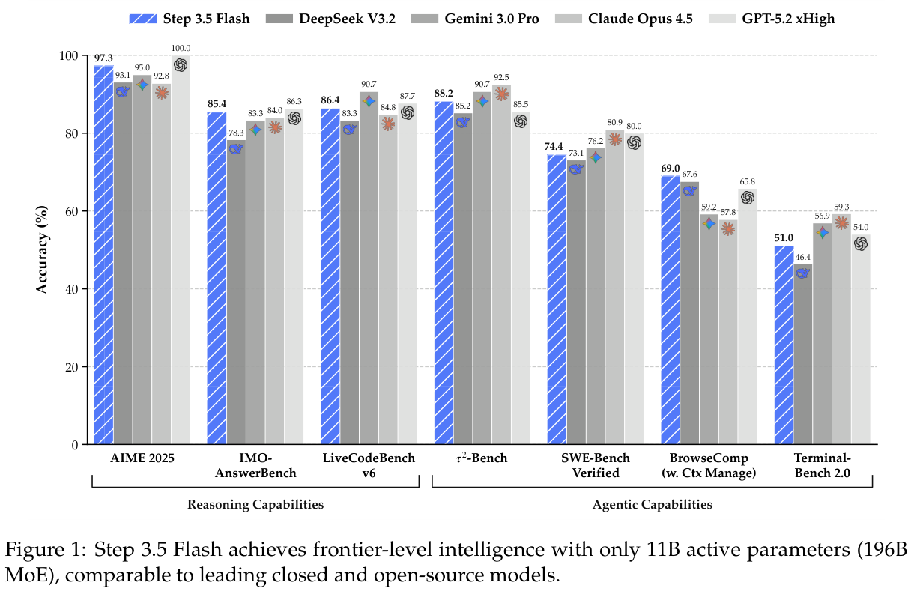
arXiv:2602.10604v2 [cs.CL] · 2026 年 2 月 23 日
目录
1 引言 4
2 架构 5
2.1 设计理念 5
2.2 采用混合 attention 的稀疏 MoE 主干 6
2.3 架构消融与结果 8
3 基础设施 9
3.1 计算集群 9
3.2 训练框架 9
3.3 高吞吐量轻量监控 10
4 预训练与中期训练 10
4.1 训练稳定性 11
4.1.1 Muon 的数值敏感性 11
4.1.2 路由坍塌之外的专家坍塌 12
4.1.3 MoE 层中的局部激活爆增 12
4.2 训练课程 13
4.2.1 数据混合 13
4.2.2 调度 14
4.2.3 超参数 15
5 后训练 15
5.1 专家模型构建与自蒸馏 15
5.2 可扩展 RL 16
5.2.1 MIS 过滤策略优化（MIS-PO） 16
5.2.2 奖励系统 18
5.2.3 超参数 19
5.3 数据合成与整理 19
5.3.1 通用与推理 19
5.3.2 通用工具学习 20
5.3.3 代码 agent 20
目录（续）
5.3.4 搜索与研究 agent 20
5.4 Agent 基础设施 21
6 评估 21
6.1 预训练评估 21
6.2 后训练评估 23
7 局限 23
A 架构细节 27
A.1 逐头 gated attention 27
A.2 Attention 增强方法的速度基准 28
A.3 元 token 29
A.4 预训练消融细节 29
B 局部激活爆增的详细分析 30
C Step 预训练数据基础 32
C.1 知识数据构建 32
C.2 代码数据 33
C.3 数学与 STEM 数据 34
C.4 数据基础设施 35
C.5 数据消融设置 35
D 后训练细节 35
D.1 SFT 细节 35
D.2 RL 细节与消融 36
D.3 tool-integrated reasoning 与并行推理 39
E 详细评估协议与提示词 40
E.1 预训练模型评估细节 40
E.2 后训练模型评估细节 45
E.3 内部评估——基准与方法 52
1 引言
虽然开源大语言模型（LLM）[1–6] 在可验证任务 [10–12] 上迅速缩小了与闭源前沿系统 [7–9] 的性能差距，但随着 agent 系统的重要性上升，新的挑战也随之出现。具体而言，开源模型在复杂推理方面仍然落后于闭源前沿模型。此外，关键的效率瓶颈阻碍了它们在长上下文 agent 任务 [13–21] 中的应用，更不用说部署到边缘设备或资源受限环境。
设计 Step 3.5 Flash 的架构时，我们聚焦两个核心方面：效率与容量。我们采用稀疏混合专家（MoE）[22–26] 架构，总参数为 196B，每个 token 仅激活 11B，并将滑动窗口 attention（SWA）[27] 与全局 attention 按 3:1 配比结合，再加入多 token 预测（MTP-3）[3,28–30]，以降低长上下文延迟。为了在混合 attention 下以最小开销提高容量，我们将滑动窗口 attention（SWA）层的 query 头数从 64 增加至 96，并采用逐头 gated attention [31]。这一设计支持大规模在线部署，在 OpenRouter 上线第一周，Hopper GPU 持续达到约 170 token/s。1
在预训练方面，我们将稳定性视为首要要求，通过轻量异步指标服务器构建了完整的可观测性与诊断体系，持续记录 micro-batch 级日志。这一基础设施能够系统识别并缓解大规模 MoE 的失效模式（例如 Muon 相关精度敏感性、专家坍塌 [32] 以及激活爆增 [5,33]）。结合能够提供更准确、更稳定更新的改进版 Muon 优化器 [34]，我们在 17.2T 高质量、多样化 token 上实现稳定训练，仅出现一次短暂的 loss spike。在这种稳定的训练机制下，Step 3.5 Flash Base 在数学、代码和知识基准上能够与 DeepSeek-V3.2-Exp Base [1]、Kimi-K2-Base [5] 等更大模型竞争。尤其是在 SimpleQA [35] 上，它取得 31.6% 的分数，仅使用三分之一参数便超过 DeepSeek-V3.2-Exp Base。
迈向前沿级智能时，当前后训练系统面临两个紧密相关的挑战：用于自蒸馏的领域专家迭代效率不足 [1–4]，以及 MoE 模型的强化学习（RL）难以扩展到长程推理。训练单一通才直接覆盖不同领域，往往会牺牲领域专长；维护独立专家模型又会导致碎片化，使多模型持续迭代的成本难以为继。同时，当模型扩展至更深的推理轨迹时，off-policy rollout 中即使很小的 token 级差异也可能累积成高方差 gradient。这一效应在 MoE 模型中尤其严重，因为专家级路由会引入更大的分布偏移，使前沿性能区间内的优化不稳定 [1,36–38]。
为应对这些挑战，我们提出基于共享 SFT 底座的大规模 RL 统一后训练方案。框架交替开展领域专门化与全局综合，在维持单个高性能通才模型的同时，实现高效专家迭代。专门的中期训练阶段将上下文窗口扩展至 128k，并通过合成数据增强核心 agent 和推理能力，为后续后训练提供良好初始化。为了在统一框架内支持稳定、可扩展的 RL，我们引入 Metropolis 独立采样过滤策略优化（MIS-PO）[39,40]，以 token 和轨迹两个层面的离散分布过滤取代连续重要性加权。通过将优化限制在稳定信赖域内的样本上，MIS-PO 在保留有效学习信号的同时显著降低 gradient 方差，使 RL 能够可靠扩展到长程推理和 agent 行为。
尽管只有 11B 激活参数，Step 3.5 Flash 在广泛的推理与 agent 基准上，仍实现了与领先前沿模型和系统具有竞争力的表现。在标准推理条件下，它在推理任务上取得突出结果，包括 IMO-AnswerBench [41] 的 85.4% 和 LiveCodeBench-v6（2024.08–2025.05）[12] 的 86.4%；同时展示出稳健的长程工具增强能力，在 \(\tau^2\)-Bench [15] 上达到 88.2%，在 BrowseComp（使用上下文管理）[17] 上达到 69.0%，在 Terminal-Bench 2.0 [16] 上达到 51.0%。采用 PaCoRe [42] 深度思考推理后，Step 3.5 Flash 在需要长时间思考与多轮综合的推理密集型基准上进一步提升。综合而言，这些结果表明，Step 3.5 Flash 在推理与 agent 场景中都显著缩小了先进开放模型与前沿专有系统之间的差距。
2 架构
2.1 设计理念
Step 3.5 Flash 的架构体现了模型与系统协同设计的范式变化。除智能与成本这两个传统目标之外，自主 agent 时代还将第三项关键约束提升到核心地位：推理延迟。在交互式 agent 工作流 [43,44] 中，更低延迟会直接减少完成任务所需的实际时间，或者反过来，在固定时间预算内借助 test-time scaling [42,45–47] 提升智能。
Agent 工作负载通常呈现独特特征：大量上下文 prefill，随后是持续较长时间的多轮交互式 decoding。因此，我们沿三个相互关联的方向协同设计 Step 3.5 Flash，以降低实际延迟：attention（加速长上下文处理并与 MTP 良好配合）、稀疏 MoE（避免分布式部署中的慢节点降低吞吐量）以及多 token 预测（MTP；借助 speculative decoding 加快生成）。
Attention。为了加速 prefill，我们采用混合 attention 策略 [48–50]：
- 滑动窗口 attention（SWA）。我们选择 SWA [27] 而非线性 attention [10,51]，以最大化 decoding 效率。虽然两者都具有线性复杂度，但线性 attention 的状态更新机制，使 speculative decoding [52–54] 所需的高效草稿树生成和并行树验证变得复杂。相比之下，SWA 保留标准 attention 语义，通过 \(KV\) 掩码天然适于并行验证。此外，在缺乏充分实证证据证明线性 attention 对 agent 任务具有更优长上下文建模能力的情况下，我们发现窗口大小 \(W=512\) 的 SWA 在 kernel 效率与局部依赖捕获之间实现了良好平衡。
- 与硬件对齐的分组 query attention（GQA-8）。面向标准 8 GPU 服务器节点部署，我们为模型配置八个 \(KV\) 头（GQA-8）[55]。这使 KV cache 分片与 8 路张量并行对齐，并改善内存访问模式。关键在于，虽然 GQA-8 使 attention 更受内存带宽限制，它也创造了计算余量，可以吸收 speculative 草稿生成与验证的开销，从而支持更积极的多 token 推测，而不带来同比例的延迟代价。
稀疏 MoE。在前馈侧，我们采用细粒度 MoE [22–26]，在保持容量的同时减少平均 FFN 计算。我们利用专家并行（EP）[25] 支持可扩展的
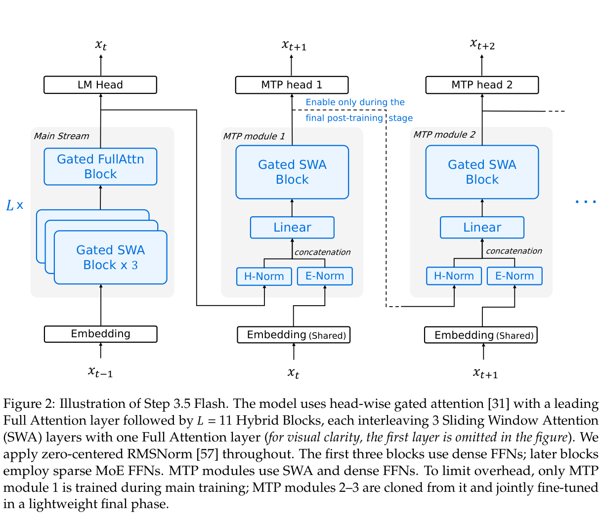
部署（接上页）。然而，在 EP 下，端到端延迟可能主要由路由不均衡造成的慢节点决定：token 分配偏斜使工作负载集中于少数专家及承载它们的 GPU，在同步点限制吞吐量。因此，我们引入 EP 组均衡 MoE 路由策略。
多 token 预测（MTP）。为了进一步降低自回归延迟，我们引入多 token 预测（MTP）[29,56]，作为 speculative decoding [50] 的补充手段。为了保持推测过程轻量，我们利用 SWA 和稠密 FFN [3] 简化 MTP 头。
我们进一步将模型规模限制在 200B 参数以下，使其能够在高端工作站 128GB 的内存预算内实现高性能推理。
2.2 采用混合 attention 的稀疏 MoE 主干
如图 2 所示，Step 3.5 Flash 采用 45 层稀疏 MoE transformer 主干（3 个稠密层、42 个 MoE 层），搭配专门设计的混合 attention 层布局。每个 MoE 层包含 288 个路由专家和 1 个共享专家，由 top-\(k\) 路由器为每个 token 激活 \(k=8\) 个专家。该配置保留广泛的知识容量（196B 总参数），同时将每个 token 的激活限制为 11B，使推理延迟保持足够低，从而支持高度
灵敏的 agent 交互（接上页）。表 6 汇总了 Step 3.5 Flash 的关键架构超参数。
混合 attention 层布局。为平衡长上下文效率与稳健的远距离连接，Step 3.5 Flash 受 [33,49,58] 启发，采用 3:1（SWA:Full）的交错 attention 布局，记为 \(S^3F^1\)。这一配置重复四层模式：三个 SWA 层（\(W=512\)），随后是一个全局 GQA-8 层。然而，在初始实验中，简单的交错策略在多个基准上都持续落后于稠密 attention 基线（表 10）。为了在不增加实际开销的情况下弥补性能差距，我们采用两项互补增强措施：（i）增加 SWA query 头数；（ii）采用逐头 gated attention [31]。
增加 SWA query 头。使用更多 query 头（从 64 增至 96）能够有效缓解从统一全局 attention 架构转为 \(S^3F^1\) 布局时通常出现的性能下降（表 10）。我们认为，这几乎是一次“免费午餐”。因为在长文本场景中，简单 SWA 的开销非常小，即使我们的方案大幅增加其规模，开销仍然很低。
逐头 gated attention。简单 SWA 的一个局限是，当输入窗口内没有有用信息时，无法有效吸收未使用的 attention 权重 [31,59–61]。先前工作 [3,33] 在窗口中引入可学习、与数据无关的 sink token 来解决这一问题。我们选择另一种方法：集成参数高效的逐头门控机制 [31,62,63]，可将其理解为引入依赖数据的 sink token。实现细节与进一步讨论见附录 A.1。逐头门控对理论 FLOPs 和实际延迟的影响同样可以忽略。附录 A.2 报告门控和增加 SWA 头数的更多性能分析与基准结果。
MoE 专家并行负载均衡。我们采用无辅助损失负载均衡 [29,64]，鼓励专家之间全局 token 均衡。然而，该方法不能保证 micro-batch 层面的 EP rank 负载均衡，可能造成慢节点并降低吞吐量。因此，我们引入 EP 级均衡损失，明确促进 rank 级利用率均匀 [26]。EP 将专家集合 \(\mathcal E\) 跨 rank 划分为 \(G\) 个互不相交的组 \(\{\mathcal E_g\}_{g=1}^G\)。对 token \(t\)，以 \(S_t\) 表示 top-\(K\) 专家（掩码 \(s_{t,e}=\mathbf1[e\in S_t]\)），以 \(p_{t,\cdot}\) 表示路由概率。那么 EP 负载均衡损失 \(\mathcal L_{EP}\) 为：
多 token 预测（MTP）。为了加速长上下文 agent 工作负载的 speculative decoding，我们附加三个轻量 MTP 头。每个 MTP 头由 SWA 与稠密 FFN 组成，仅增加 0.81B 参数（约 0.41%）。我们根据它们相对于标准 LM 头的额外预测偏移量编号：对 \(h\in\{1,2,3\}\)，MTP-\(h\) 基于位置 \(t\) 的主干隐藏状态预测 token \(x_{t+1+h}\)。为了控制训练开销，大多数训练阶段仅激活并优化 MTP-1。当主干训练充分后，我们用 MTP-1 初始化 MTP-2、MTP-3，并在轻量后训练阶段联合训练所有 MTP 头。受 Fast-MTP [65] 启发，我们针对 MTP 头的各预测偏移采用依位置变化的损失重加权，避免对远期 token 预测过度优化。
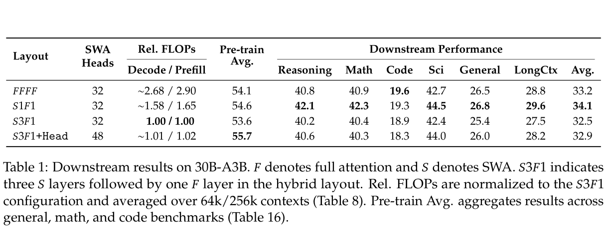
2.3 架构消融与结果
我们进行了广泛实验，验证 Step 3.5 Flash 的关键设计选择，重点考察（i）attention 布局，包括 SWA 与头数扩展，以及（ii）逐头 gated attention 与 sink token 的对比。为了确保效率优化不会损害模型性能，我们采用两种互补的消融方案：一种评估覆盖预训练、32k 长上下文扩展和 64k 上下文长度 SFT 的完整端到端流程；另一种将分析扩展到 100B 参数，以研究这些设计选择如何随规模变化。所有表格的详细架构与评估设置见附录 A.4。这些大规模实验的关键发现总结如下。
SWA 与长上下文。我们对 30B-A3B 模型完成完整训练流程（1.4T token 预训练，随后 SFT），评估混合 attention 对推理和长上下文性能的端到端影响。我们消融四种 attention 布局：全部全局 attention（\(FFFF\)）、SWA／全局交替（\(S^1F^1\)）、3:1 SWA 与全局布局（\(S^3F^1\)），以及增加 SWA query 头数的 \(S^3F^1\) 变体（\(S^3F^1+\mathrm{Head}\)）。为了隔离 attention 结构的影响，我们将 SWA 窗口固定为 \(W=512\)，并禁用 MTP（见附录表 9、表 10）。
表 1 显示各布局之间清晰的成本与质量权衡。\(S^3F^1\) 实现了最低的归一化 attention 侧 FLOPs（prefill 和 decoding 分别归一化为 1.00），而 \(FFFF\) 的成本约为其 2.68／2.90 倍；不过，\(S^3F^1\) 呈现持续的质量下降（例如 LongCtx 从 28.8 降至 27.5）。
增加 SWA query 头数能够很大程度补偿这一损失。值得注意的是，\(S^3F^1+\mathrm{Head}\) 在预训练阶段已超过 \(FFFF\)（55.7 对 54.1），后训练后仍具有竞争力：LongCtx 从 27.5 提升至 28.2，Sci 从 42.4 提升至 44.0，以几乎可以忽略的额外 attention 成本，弥合了与 \(FFFF\) 基线的大部分差距。剩余缺点有限且局部化（例如 Code 小幅降至 18.3），整体质量趋势则有利于 \(S^3F^1+\mathrm{Head}\)。
有趣的是，交替 \(S^1F^1\) 布局取得最佳整体 SFT 质量和最高 LongCtx 分数（29.6），但需要显著更多 attention 侧 prefill／decoding FLOPs（约 1.58／1.65），比 \(S^3F^1+\mathrm{Head}\) 高约 60%。因此，我们将 \(S^3F^1+\mathrm{Head}\) 作为长上下文 agent 工作负载的默认配置，优先考虑其大幅降低的 prefill／decoding 成本，以及强劲、稳定的长上下文表现。
逐头 gated attention 与 sink token。我们在 100B-A10B MoE 上开展规模化受控预训练实验，研究现实扩展条件下的 attention 侧机制。
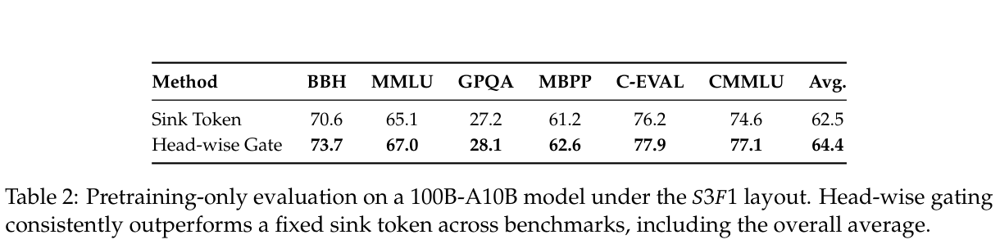
具体而言，我们将 attention 布局固定为相同的 \(S^3F^1\) 配置、窗口大小 \(W=512\)，比较 sink token 与逐头 gated attention。如表 2 所示，逐头门控持续提高质量，将平均性能从 62.46 提升至 64.43（+1.97）。因此，后续研究采用逐头 gated attention 作为默认机制。
3 基础设施
3.1 计算集群
Step 3.5 Flash 在配备 4,096 张 NVIDIA H800 GPU 的大规模集群上训练。每个节点包含 8 张通过 NVLink 与 NVSwitch 互联的 GPU，实现高带宽节点内通信。对于节点间连接，集群依赖 8×200 Gbps RoCE 链路，以保持大规模同步与数据交换的效率。
3.2 训练框架
Step 3.5 Flash 的训练由内部 Steptron 框架支持，这是一个基于 PyTorch [66] 与 Megatron-LM [67] 构建的轻量高性能系统。Steptron 统一完整模型开发流程，在单一工程技术栈下支持大规模预训练、后训练和强化学习（RL）工作负载。
Step 3.5 Flash 采用混合并行策略，包括带虚拟流水线阶段（VPP）的 8 路流水线并行（PP）[68]、8 路专家并行（EP）[25]，以及 ZeRO-1 数据并行（DP）[69]。为了支持 Step 3.5 Flash 高效训练，我们采用以下工程技术。
解耦并行。遵循 Megatron-Core [70]，我们实现解耦并行方案，使 attention 与 MoE 模块能够使用不同并行策略。我们为两者分配独立并行组，并在各模块对应的数据并行组内执行 gradient 归约与缩放。
通信优化。解耦的 attention 与 MoE 的并发 DP 通信流可能使 RoCE 链路饱和，拥塞导致 DP 开销显著增加。为此，我们提出两项互补通信优化，将迭代时间最多减少 5%。首先，感知网络互连的通信调度，将 DP 流量划分为节点内 NVLink 与节点间 RoCE 两个阶段，并将其流水化，充分利用两种互连。其次，感知通信的 rank 放置利用作业级通信特征，在交换机之间安排 rank，减少跳数，并引导大流量避开交换机间热点。
Muon ZeRO-1 重分片。Muon [34] 在 Newton–Schulz 正交化时需要每个参数的完整（未分片）gradient，这与 ZeRO-1 [69] 的 reduce-scatter 在 DP rank 间分片参数 gradient 的方式冲突。Megatron-LM 当前实现采用直接对 FP32 gradient 做 all-reduce 的方式，在 Muon 更新前重建完整 gradient，但通信量几乎翻倍。我们改为将完整参数分配给各 DP rank，并将 gradient 缓冲区重新打包为以 rank 为主序的缓冲区，使一次 reduce-scatter 就能把每个参数的完整 gradient 送到其所属 rank。由于填充到最大 rank 的开销随数据并行规模增加，我们仅对专家参数应用该方式，非专家参数则采用 DP all-reduce。相比直接 all-reduce 基线，这种混合策略用不到 4 GB 的额外内存，将端到端迭代时间减少约 5%。
GPU kernel 优化。我们还应用 kernel 级优化提升训练效率。在 attention 中，将 QK normalization 与 RoPE 融合。在 MoE 中，融合多个小算子以减少 kernel 启动开销和内存流量，并实现类似 SonicMoE [71] 的、结合 grouped GEMM 的融合 MoE gather/scatter。
细粒度选择性 checkpoint。我们的训练框架支持细粒度激活重计算，可在每层的子模块级切换（例如 attention、FFN、归一化、SiLU 和 MoE 重排），从而只对最耗内存的组件选择性重计算，以最小开销减少峰值内存。
3.3 高吞吐量轻量监控
我们收集一套全面指标（例如每个 micro-batch 的专家分布和 gradient 范数），对训练进行细粒度监控。然而，遥测规模巨大：4,096 GPU 工作负载每次迭代会产生近 600 万条消息。在主循环中进行同步全局归约，会引入数秒的显著开销，实际上使迭代时间翻倍，这对于高性能训练显然无法接受。为缓解这一问题，我们开发轻量指标服务器，将遥测处理与训练路径解耦。每个 rank 利用内部异步通信框架 StepRPC，将本地指标异步卸载至远程服务器。这一方法将遥测开销降至每次迭代约 100 ms。
指标服务器缓冲传入指标，仅在收到所有参与 rank 的迭代结束信号后，才触发归约和数据库持久化，从而消除主循环内同步。为了低延迟接收和处理数百万条消息，服务器采用高并发多进程系统实现，包含两个解耦模块：（i）针对高吞吐量接收优化的消息接收器；（ii）负责聚合与持久化的归约处理器。通过利用模块内部及模块之间的多核并行，服务器能够跟上遥测流，确保指标管理永不落后于训练。
4 预训练与中期训练
概览。本节总结预训练和中期训练过程，重点介绍大规模稀疏 MoE 训练的实际稳定性约束。我们先介绍训练稳定性诊断与缓解措施（第 4.1 节），再详细介绍预训练与中期训练使用的课程，包括数据混合、调度和关键超参数（第 4.2 节）。
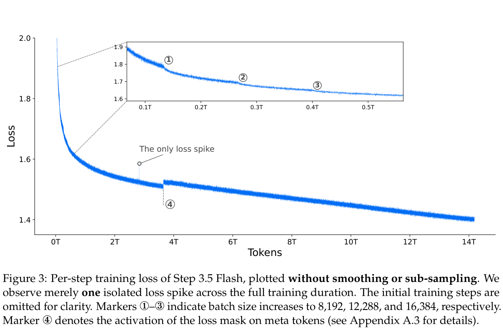
4.1 训练稳定性
训练稳定性是大规模稀疏 MoE 预训练的首要要求。为了让稳定性成为可操作的目标，我们基于轻量异步指标服务器，构建完整的可观测性与诊断体系，持续记录 micro-batch 级日志（见第 3.3 节）。这一基础设施能够细粒度观察优化器级与专家级信号，系统缓解大规模 MoE 训练中反复出现的失效模式。
实践中，我们发现指标体系能够帮助提前发现并精确定位三类主要不稳定性：（i）Muon [34] 对数值敏感的极分解因子迭代在低精度下造成短暂 loss spike 和偶发的随机数值爆增；（ii）即使路由器分派统计看似健康，也可能出现专家侧坍塌（“死亡专家”）；（iii）局限于少量专家的局部激活爆增。
在这些诊断指导的缓解措施下，整个预训练过程的损失保持平滑，仅出现一次 loss spike。图 3 展示学习率冷却之前的完整曲线。
4.1.1 Muon 的数值敏感性
Muon 通过 Newton–Schulz（NS）迭代 [72] 近似半正交更新方向。在早期实验中，我们发现使用收敛更快的正交化近似，能够带来幅度不大但持续的损失降低。因此，我们采用 Polar Express [73] 迭代，并固定执行 \(T=6\) 步，以平衡优化质量与吞吐量。
然而，尽管采用推荐的安全缩放 [73]，我们偶尔仍观察到剧烈且无法恢复的 loss spike。这些 spike 不具有确定性（从附近 checkpoint 恢复通常可以避开），提示存在数值问题。模拟表明，bfloat16 Polar Express 在特定更新统计下，可能由于加法中的累计误差，罕见地产生极端中间 outlier。因此，我们仅将 Polar Express 迭代（状态与中间量）转换为 float16，
其余训练仍保持混合精度（接上页）。这一修改后，spike 不再出现。
4.1.2 路由坍塌之外的专家坍塌
我们此前的 Step-3 工作 [32] 报告，MoE 训练可能出现“死亡专家”，通常描述为专家长期接收的 token 分派量极少，因此获得的有效 gradient 信号很少。在之前的研究中，我们发现，即使路由器分派保持稳定，专家坍塌也可能表现为专家侧问题，即专家激活消失，以及专家参数范数停滞或下降。
我们观察到两个因素尤其重要：（i）路由专家聚合需要显式缩放。引入共享专家时，必须加入显式缩放因子，校准共享专家与路由专家的相对贡献。较小模型可能隐式学会这种平衡，但更大模型的自我校准不够可靠。即使路由频率看起来健康，不匹配仍可能抑制路由专家的实际贡献。（ii）在细粒度稀疏条件下，micro-batch 均衡可能限制过强。对于稀疏、细粒度 MoE 设计，micro-batch 级负载均衡约束（例如 Switch 式路由 [22] 的常见实现）可能过于严格。如 [74] 分析，micro-batch LBL 可能导致专家之间过度竞争，阻碍有效专门化。
因此，我们倾向采用更大范围的均衡（例如全局 batch 统计）[74,75]，或者根据观测负载进行无需辅助损失的偏置调整 [29,64]。实践中，路由器分派统计通常稳定，不能敏感地反映专家坍塌。我们建议监控专家侧信号，包括逐专家激活范数（例如 MoE FFN 中间量的 RMS／平均范数）和参数范数（例如专家投影矩阵的 Frobenius 范数）。当部分专家趋向近零激活／更新，而中位数保持稳定时（例如最小值与中位数之比不断下降），便是专家“死亡”的早期预警。
4.1.3 MoE 层中的局部激活爆增
随着主训练阶段的专家专门化逐渐成熟，我们在较深 MoE 层中观察到局部稳定性问题。具体来说，少量专家（每层通常仅一两个）的激活范数迅速增长，而同层绝大多数专家仍表现正常。这种差异产生重尾激活分布：专家激活范数的中位数保持稳定，但最大激活范数爆炸，显著增加数值溢出和下游不稳定的风险。
图 4 展示这一失效模式。值得注意的是，训练损失完全掩盖了内部不稳定性：尽管面板（a）对应的底层范数正在爆炸，损失几乎不变。我们通过监控逐专家 FFN 输出范数的离散程度追踪此现象。面板（b）、（c）显示，中间层（例如第 38 层）仍保持稳定分布，最后几层（即第 45 层）的最大值（实线）与中位数（虚线）差距却迅速扩大。这表明激活能量正危险地集中到网络深处少数“失控”专家。为缓解这一问题，我们评估两种不同干预：
- 裁剪专家投影权重：约束 MoE FFN 专家投影矩阵范数。对每个专家投影矩阵 \(W\)，如果最大激活范数 \(\max_x\|Wx\|\) 超过阈值 \(\tau\)，则通过 \(W\leftarrow W\cdot\frac{\tau}{\max_x\|Wx\|}\) 重缩放。这与 attention 中的 MuonClip [5] 类似，但我们在 checkpoint 上离线裁剪，而非实时处理。
- 专家内部激活裁剪：类似 [33]，在输出投影前，直接对 MoE FFN 中间激活逐元素裁剪。
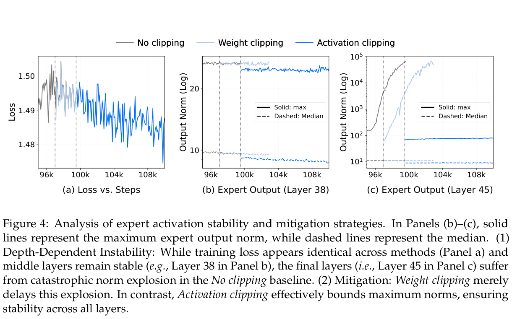
虽然图 4（a）中不同缓解策略的训练损失看似无法区分，但最大值与中位数之比能够可靠揭示底层不稳定。如面板（b）、（c）所示，激活裁剪确保内部范数保持稳定轨迹，而单纯权重裁剪无法阻止 outlier 专家再次出现。因此，我们将逐专家激活范数的最大值／中位数之比确定为监控训练稳定性的一项稳健且必要的指标。
激活爆增由多种因素推动。我们观察到，高频二元组可能触发专家专门化。采用 pre-norm [76,77] 时，单个专家可以无限放大输出并主导最终输出范数，导致近乎确定性的预测行为。SwiGLU [78] 进一步加剧这一风险：门控分支与上投影分支高度对齐，会产生幅度极端的稀疏激活。Muon 又会放大持续的低秩更新，进一步加速坍塌。详细分析见附录 B。
4.2 训练课程
训练从广泛的开放域覆盖逐步转向 agent 与长上下文专门化。首先，我们在广泛开放域混合数据上，以 4k 上下文进行预训练，建立通用能力；随后将混合数据退火转向更高质量的知识及更多软件开发数据（代码、PR、issue 和 commit），同时将上下文窗口扩展到 32k。接下来，专门的中期训练阶段将上下文从 32k 扩展至 128k，增强长程推理，并改善后续后训练和 agent 工作负载的初始化。总体而言，预训练使用约 17.6T token，中期训练使用 750B token。
4.2.1 数据混合
我们的语料结合通用开放域数据和面向 agent 的数据。下面总结关键来源，更多细节见附录 C。
通用知识数据。为了支持广泛世界知识，我们构建 StepCrawl（附录 C.1.1），这是一套超越标准 Common Crawl [79] 的内部抓取与整理基础设施，能够从网页（HTML）和图书／文档类来源（ePub／PDF）大规模收集数万亿高质量 token。所有内容均经过多阶段质量过滤、站点／类别标注、去重和清理。
代码数据。强大的代码能力是 agent 模型的基础。我们的代码语料通过修改版 OpenCoder [80] 流程整理和精炼。过滤规则从零容忍放宽为每篇文档允许违反 0–6 条启发式规则（附录 C.2.1），平衡质量与多样性，并在退火和中期训练时提高代码数据采样比例，以增强 agent 相关编程能力。
PR／Issue／Commit 数据。为了更好匹配现实软件工程工作流，我们从星标数不少于 10 的 GitHub 仓库整理全面的 PR／Issue／Commit 数据集（附录 C.2.2）。其中包括：（1）根据 git diff 验证的基础数据（针对基准 [14,81] 去重）；（2）从 PR 讨论与 commit 派生的 PR 对话数据，使用 Agentless 式模板 [82] 进行文件定位和代码修复；（3）用于中期训练和后训练的衍生软件工程语料。
工具使用与推理数据。为了提高工具使用稳健性与多步推理，我们加入覆盖数学／代码／科学／通用知识的合成与半合成数据，以及针对搜索 agent、SWE agent 和工具执行的领域样本。中期训练时，我们进一步引入长上下文样本（天然长文档和长篇合成任务），增强在扩展上下文上的规划与推理。
4.2.2 调度
预训练调度。预训练包含两个阶段：
- 预训练阶段 1：开放域预训练（14.6T token，4k 上下文）。广泛开放域训练，以最大化覆盖范围和基础能力。
- 预训练阶段 2：退火＋长上下文初始化（3T token，4k 到 32k 上下文）。将混合数据退火转向代码及 PR／Issue／Commit 来源，同时提高高质量知识和推理密集样本的比例。该阶段首先以 4k 上下文训练 2T token，再在相同退火混合数据下以 32k 上下文训练 1T token，初始化长上下文训练。
中期训练调度。中期训练也包含两个阶段：
- 中期训练阶段 1：32k 专门化（386B token，32k 上下文）。回放预训练的 81B token（21%），缓解分布偏移并稳定专门化，同时强调软件工程师与工具使用数据。
- 中期训练阶段 2：长上下文专门化（364B token，128k 上下文）。保留 10.5B 回放 token，进一步通过合成长程推理、天然长文档（从预训练数据中选择长度超过 32k 的文档），以及代码 agent、搜索 agent 和工具使用的领域数据，专门化长上下文能力。
4.2.3 超参数
预训练超参数。整个预训练使用 Muon 优化器 [34]，权重衰减设为 0.1，gradient 裁剪设为 1.0。学习率在最初 2,000 步从 0 线性 warmup 到 \(2.5\times10^{-4}\)，随后在预训练阶段 1 余下过程按余弦衰减到 \(5\times10^{-5}\)。预训练阶段 2 中，4k 部分（2T token）应用第二次余弦衰减，从 \(5\times10^{-5}\) 降至 \(2\times10^{-5}\)；32k 部分（1T token）固定为 \(2\times10^{-5}\)。全局 batch 大小在前 400B token 内从 4096 逐步增加至 16384，其余训练保持 16384，退火的 32k 部分则设为 2k。遵循 [29]，预训练阶段 1 的 MTP 损失权重为 0.3，阶段 2 为 0.1。对于无辅助损失负载均衡，前 14.6T token 的偏置更新率为 0.001，退火期间衰减至 0.0；整个预训练都应用系数为 0.001 的 EP 组均衡损失。对于 RoPE [83]，4k 训练时，全局 attention 与 SWA 都采用 \(\theta=10,000\)；退火的 32k 部分仅将全局 attention 设为 \(\theta_{\mathrm{Full}}=1,000,000\)，SWA 保持 \(\theta_{\mathrm{SWA}}=10,000\)。
中期训练超参数。中期训练继续使用 Muon [34]。两个阶段均冻结 MoE 路由器权重、禁用 EP 组均衡损失，并将 MTP 损失权重固定为 0.1。学习率在最初 3% 迭代中从 0 warmup 至 \(2\times10^{-5}\)，中期训练阶段 1 保持恒定，阶段 2 衰减至 \(7.3\times10^{-6}\)。对于 RoPE 选择性缩放，32k 时（阶段 1）设 \(\theta_{\mathrm{Full}}=1,000,000\)，128k 时（阶段 2）增加至 \(5,000,000\)，整个中期训练始终保持 \(\theta_{\mathrm{SWA}}=10,000\) [84]。
5 后训练
本节介绍大规模强化学习（RL）的统一后训练方案，从统一 SFT 模型开始。该框架结合可验证奖励信号与人类偏好反馈，实现持续自我提升，即使在 MoE 模型的大规模 off-policy 训练中也能保持稳定。与先前工作 [2,85] 类似，该过程采用两阶段方法。首先，我们在统一 SFT 基线上，针对数学、代码、STEM、工具使用、长上下文理解、人类偏好和 agent 推理开展领域 RL，构建专家模型。随后，利用自蒸馏和可扩展 RL，将这些专门化专家蒸馏为通才模型，确保最终模型在不同任务上都能与专门化基线竞争。通过系统地交替开展针对性专门化与广泛综合，我们实现稳健泛化，而不牺牲专家级性能。
5.1 专家模型构建与自蒸馏
我们采用两阶段 SFT 流程，为后续 RL 建立稳健基础。第一阶段开展大规模多领域 SFT，覆盖数学、代码、STEM、逻辑、通用问答、代码 agent、工具使用、搜索 agent 与长上下文理解。采用感知难度的过滤与策略性均衡，培养广泛 agent 行为。第二阶段通过注入分布外（OOD）信号 [46,86] 明确最大化推理密度，其中包括约 30k 条专家级化学轨迹与合成算术任务。这种有针对性地接触不同推理模式，仅用三个 epoch 就能释放潜在能力，使模型具备初始化后续领域 RL 阶段所需的复杂结构能力。
领域 RL 之后，我们将分散的专家能力整合到一个统一学生模型中，学生模型从中期训练 checkpoint 初始化。此阶段，专家模型使用与第一阶段 SFT 语料共享的提示词分布，生成高
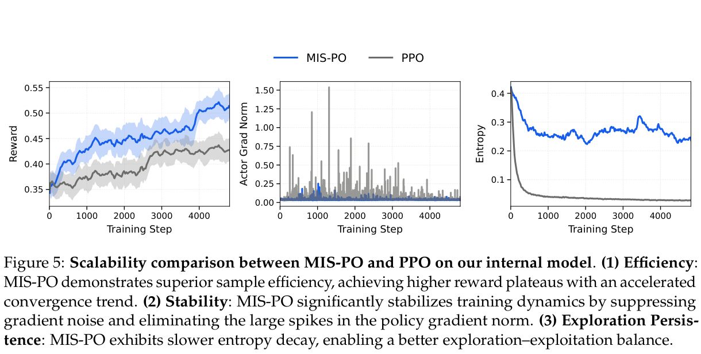
质量轨迹（接上页），相比直接整合 RL，这种方式更稳定、更高效。该方法采用拒绝采样，排除语言混杂或过度思考等不良模式，将专家知识集中到单一学生模型。通过建立这一高质量基础，自蒸馏显著减轻后续 RL 阶段的优化负担。
超参数。采用 Muon 优化器 [34]，warmup 比例为 3%，学习率从 \(1.0\times10^{-5}\) 按余弦衰减至 \(5.0\times10^{-6}\)。类似中期训练，我们冻结 MoE 路由器权重并禁用 EP 组均衡损失。SFT 的 MTP 损失权重为 0.1，全局 batch 大小为 32，全局序列长度为 128k。对于旋转位置 embedding（RoPE）[83]，保持 \(\theta_{\mathrm{SWA}}=10,000\)，并将 \(\theta_{\mathrm{Full}}\) 调整为 5,000,000，以适配 128k 上下文长度 [84]。
5.2 可扩展 RL
在面向 LLM 的 RL 中，我们优化策略 \(\pi_\theta\)，最大化轨迹 \(\tau=(s_0,a_0,\ldots,s_T)\) 的终局奖励，其中 \(a_t\) 表示在状态 \(s_t\) 生成的 token。但对于推理任务，这个过程会面临高 gradient 方差造成的严重不稳定，极长时域与模型规模会进一步放大这一问题（图 5（2））。方差主要来自高吞吐量推理引擎与训练框架之间的基础设施差异，以及迭代更新固有的 off-policy 不对齐。在这种情况下，重要性采样本身不稳定，因为微小 token 级概率偏移会累积成噪声 gradient，阻碍收敛。
5.2.1 MIS 过滤策略优化（MIS-PO）
为应对稳定性挑战，我们提出受 Metropolis 独立采样（MIS）[39,40] 启发的 MIS-PO。我们将推理策略视为提议分布，训练策略视为目标分布，仅用与目标分布足够接近的样本更新。重要性采样通过有界比率缩放 gradient，常常出现高方差；相比之下，MIS-PO 使用二元掩码过滤偏离分布的样本，将保留轨迹视为实际上 on-policy，从而显著降低 gradient 方差并稳定优化。
形式上，我们定义二元指示函数 \(\mathcal I(x)=\mathbf1[\rho_{\min}\le x\le\rho_{\max}]\)，并在两种粒度应用。在 token 层面，该函数过滤概率比 \(x_t=\pi_{\theta_{\mathrm{old}}}(a_t\mid s_t)/\pi_{\theta_{\mathrm{vllm}}}(a_t\mid s_t)\)，抑制训练与推理策略间的局部不匹配 [37]。在轨迹层面，对几何平均比率 \(\bar\rho(\tau)=(\prod_t x_t)^{1/T}\) 应用同一指示函数，有效丢弃显著偏离目标分布的整条轨迹。重新构造的 actor 损失，用这两个层面的离散掩码取代连续重要性权重：
通过将有效样本视为实际上 on-policy，该目标在信赖域约束下显著降低长程推理任务的 gradient 方差。图 5 展示约 5,000 训练步的消融研究：MIS-PO 的 actor gradient 范数噪声明显低于 PPO，表明可扩展性改善。更多消融见附录 D.2.3。
为进一步稳定训练动态，我们采用多项技术：感知截断的价值自举 [87]，纠正上下文长度截断引入的奖励偏差；以及路由置信度监控，预测 MoE 架构特有的不稳定。
感知截断的价值自举。为被上下文长度截断的轨迹赋予零奖励，会混淆截断与任务失败。这种模糊性无法区分未完成与错误结果，因而惩罚长链推理。为此，我们用最终状态的自举价值估计替代零奖励，将截断视为时域中断，而非终局失败。轨迹 \(\tau_i\) 的修改奖励定义为：
实证上，即使截断率高达 20%，这种感知截断的价值自举仍能稳定训练，防止不完整轨迹通常引发的奖励下降 [88,89]。消融研究确认，该技术对竞赛级基准尤其有益，因为长程推理使截断效应在这些基准中最明显。
作为稳定性代理的路由置信度。近期研究 [36,38] 将 RL 稳定性与 MoE 路由一致性联系起来。在此基础上，我们提出用路由置信度（\(\Sigma_k\)）作为稳定性代理，即被激活专家的平均概率质量。较低 \(\Sigma_k\) 表示较高路由不确定性，会放大训练与推理不匹配。初步实验发现明确的稳定性相变：低路由置信度模型脆弱，需要极强稳定化手段（例如 Router Replay [1,36,38]、严格 on-policy 更新 [90]）；高路由置信度模型则保持稳健，无需复杂干预便可支持 off-policy 训练。
RL 训练动态。为了完整展示我们的方法，图 6 展示 Step 3.5 Flash 的可验证奖励 RL（RLVR）训练动态与下游评估提升。训练奖励稳定上升，表明学习过程稳定有效。此外，Step 3.5 Flash 在不同评估基准上均获得持续提升。具体而言，IMO-AnswerBench [91] 提升 +3.2%，CF-Div2-Stepfun-cpp（附录 E.2.1：自建 CodeForces2 Div.2 基准）提升 +6.1%，ARC-AGI-1 [92] 提升 +10.6%，HLEtext [93] 提升 +3.4%。
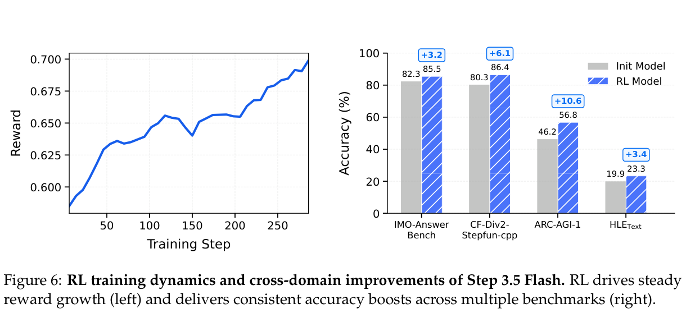
5.2.2 奖励系统
我们将 RL 框架解耦为采用可验证奖励的 RL（RLVR [94]）和采用不可验证奖励的 RL（例如 RLHF [95]），分别使用针对其监督特征设计的不同奖励。
可验证奖励。在 RLVR 中，每个提示词都与输出奖励的任务专用验证器配对。逻辑、指令遵循和代码采用基于规则的检查器；STEM 任务采用基于模型的验证器。在内部模型 450 步 RL 训练的消融研究中，STEM 任务使用模型验证器比直接使用普通 math-verify 平均提升 2.0%；更多细节见附录 D.2.2。
不可验证奖励。我们使用成对生成式奖励模型（GenRM [96]），将响应与固定参考比较，处理不可验证任务。GenRM 是推理模型，输出置信度分数，表示响应获胜的可能性。随后将分数转为 Bradley–Terry 胜率 [97]，作为奖励信号。长度控制在 GenRM 内建模为置信度惩罚，并传播至胜率奖励，有效抑制 RL 训练中的长度过度增长。我们还为包含虚构引文、过度自信断言或语言不一致的响应赋予零奖励，以确保稳健性。
Agent 奖励。搜索任务使用 LLM，根据实体匹配分数评估。对于报告生成，基于评分细则的 LLM 裁判评估研究问题、细则规范与候选报告，给出三元判断（满足、部分满足、不满足）[98]。由于中间类别往往与专家偏好不一致，我们将输出映射为非对称二元奖励，从而提供更清晰学习信号，更快收敛到与专家对齐的行为。
GenRM 训练与 MetaRM。我们利用 RM 专用提示词微调 SFT 模型，初始化 GenRM。RL 训练使用经过整理的成对偏好数据，损失为与标量奖励模型形式类似的 logsigmoid。为提升 GenRM 稳健性，我们集成额外验证器 MetaRM，惩罚伪推理响应（即从错误逻辑得出正确偏好）；检测到此类模式时，它会降低训练奖励。
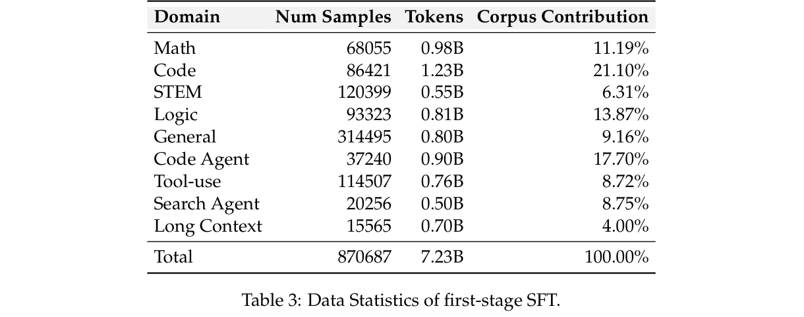
在内部模型 200 步 RL 训练的消融研究中，MetaRM 增强的 GenRM 在每项基准上均比普通 GenRM 提升 0.5%–3%（接上页）。
5.2.3 超参数
Rollout 的采样温度与 top-p 均设为 1.0，最大序列长度为 128k token。每次生成，对推理任务采样 256 个不同提示词、各 16 个响应；对人类偏好任务采样 512 个不同提示词、各 8 个响应；对工具使用任务采样 128 个不同提示词、各 8 个响应。Rollout 后，将完成样本划分为 mini-batch，训练单个 epoch，其中 actor 为 4 个 mini-batch，critic 为 12 个 mini-batch。优化采用 Muon，权重衰减为 0.1。Actor 学习率为 \(2\times10^{-6}\)，warmup 20 步；critic 学习率为 \(5\times10^{-6}\)，warmup 50 步。遵循 ORZ [90]，\(\gamma\) 与 \(\lambda\) 均设为 1。最后阶段还使用系数为 0.001 的无偏 KL 损失 [85]。公式（2）的 token 级与轨迹级掩码边界分别设为 [0.5,2] 和 [0.996,1.001]。
5.3 数据合成与整理
我们汇集开源数据、合成生成内容与用户轨迹，构建多样且难度均衡的提示词池。采用统一合成整理流程，将严格全局过滤与领域精炼结合，最大化推理密度。通过基于规则的启发式方法与基于模型的忠实度检查结合确保数据质量。最终数据集包含 871k 样本（7.23B token），详细统计见表 3。
5.3.1 通用与推理
我们的训练语料汇集不同开源来源中的社区提示词、专家响应与合成数据，包括数学 [90,99–110]、编程 [111–113]，以及科学与开放式问答 [114–117]。为了最大化推理密度，我们采用统一流程，将严格全局过滤与领域精炼结合，并通过规则启发式方法和模型忠实度检查保证质量。具体而言，数学方面，通过专家指导拒绝采样和合成大数算术保证数值稳定性。编程方面，选择严格的算法挑战，优先保证离线可执行性，同时严格清除 RAG 相关幻觉。特别地，我们缓解模型虚假声称访问
外部搜索引擎或假装检索在线解答的倾向（接上页）。此外，将科学数据限制为具有唯一、可确定解答的无歧义问题。
为支持实践场景中的泛化，我们扩展开源检查器3，并为样本增加多项现实约束。同时，从开源、合成及用户轨迹中收集通用提示词，形成多样、难度均衡的池。最终得到包含数百万样本、数十亿 token 规模的高保真数据集。
5.3.2 通用工具学习
我们提出执行驱动的数据生成框架，用于学习智能 agent 的可靠工具使用行为，解决现有合成流程中数据不一致、缺乏可验证性和模型幻觉等关键局限。我们不依赖随机探索 [118,119] 或模型模拟 [5,120]，而将工具使用行为分解为原子意图，用有限状态机（FSM）建模，明确分离抽象工具调用逻辑与参数化执行约束。数据通过带拒绝采样的“采样—执行—验证”循环生成：所有候选轨迹都在真实环境中执行，并经确定性反馈验证，确保忠实度、消除虚构行为。通过组合原子意图，该框架支持可扩展地生成复杂且可控的工具使用场景。使用这一范式，我们构建超过 100K 条高质量轨迹、总计数十亿 token，为基于工具的规划、推理和执行提供精确监督。
5.3.3 代码 agent
代码 agent 可以通过可验证环境构建与解答生成之间的闭环交互自我提升，可执行反馈持续完善两种能力。我们将环境构建视为与 bug 修复、功能实现并列的首要能力，在可验证奖励信号下合成。为此，我们从 SWE-factory [121] 框架演化出专门 agent 流程，引入跨任务记忆池，将历史构建成功记录检索为少样本示例，并使用循环检测机制避免重复探索。该流程达到 40% 环境构建成功率，通过构建轨迹中 shell 命令和错误恢复等密集监督，为模型自我演化形成正反馈。为进一步提升信号质量，我们将对最终解决方案无贡献的短暂失败与冗余执行模式抽象并掩码，从而规范化环境构建轨迹。自举得到的环境作为动态试验台，利用执行反馈和单元测试生成高质量合成数据与奖励信号，持续对齐。实证上，我们观察到双向迁移：构建专长加快编程能力，而在这些环境中编程，又会提升构建准确性，正如 DockSmith [122] 所示。借助这一演化流程，我们整理了 50k 个经验证环境，覆盖超过 15k 个 GitHub 仓库和 20 多种编程语言。这一多样集合涵盖广泛现实场景，为训练通才代码 agent 提供稳健基础。此外，还纳入多个重要开源环境，包括 SWE-smith [123]、SWE-Gym [124]、R2E-Gym [125]、SWE-rebench [126] 和 SETA [127]。
5.3.4 搜索与研究 agent
为了支持高级信息查找，我们的流程结合基于图的合成与多文档合成，强制要求多跳推理。通过在知识图谱上进行拓扑扩展
3 https://github.com/allenai/open-instruct/tree/main/open_instruct/IFEvalG
（例如 Wikidata5m [128]）并模拟跨网站浏览轨迹，我们生成能够反映现实研究复杂度的数据（接上页）。关键在于，为确保外部检索的必要性，我们使用 DeepSeek-R1 [129] 验证生成问题，系统排除无需工具交互就能被这一强推理模型解决的样本。得到的轨迹通过结构化报告生成流程 [98] 精炼，严格保证指令遵循与结构完整性。具体而言，要求严格遵循预设研究计划，丢弃偏离结构的轨迹。随后，有效输出通过模型裁判与启发式规则迭代清理，解决非正式写作、时间幻觉、混合语言痕迹等细节问题。这一端到端方法在 RESEARCHRUBRICS [21] 基准上实现行业领先表现。
5.4 Agent 基础设施
带工具使用的推理模板设计。为了将推理与 agent 能力有效整合进单一基础模型，必须确定合适的思考过程与工具使用模板。对于推理模板，我们评估三种管理策略。每轮丢弃推理历史 [129] 的方法虽然鼓励独立生成，却会导致长程任务失败（例如超过 100 轮的编程会话）。相反，保留全部推理历史会产生难以承受的上下文消耗，快速耗尽模型容量，并阻碍后续工具调用。为此，我们采用选择性保留策略：仅保留最近用户指令触发的工具使用轨迹中的推理过程。该设计在推理连贯性与上下文效率间取得最佳权衡，与近期前沿模型的实践一致 [85,130]。
对于工具使用模板，我们比较流行的 JSON 与 XML 格式。JSON 的严格语法，包括转义序列与分隔符，经常在小型、训练不足模型中引发解析错误。相比之下，XML 格式支持平坦字符串输出，语法开销明显更低。因此，我们选择 XML，确保复杂现实 agent 编程场景中的稳健性。
可扩展代码 agent 基础设施。我们的集成架构聚焦可扩展会话管理与跨框架泛化，以支持高吞吐量 agent 编程。核心是专有 Session-Router，通过 Kubernetes 编排容器生命周期，通过 Tmux 确保交互一致性。架构支持数千并发环境和无缝状态持久化，无需为不同 scaffold 手动配置 Docker。为确保跨不同 agent 工作流高度泛化，我们训练模型适应广泛交互框架，从学术标准（例如 OpenHands [131]、SWE-agent [132]、Terminus-2 [16]）到企业级协议（例如 Kilocode [133]、Roocode [134]、ClaudeCode [135]）。训练时让模型接触这些不同交互范式，有效避免它过拟合特定流程模式，使其无论底层执行环境如何都保持稳健。
6 评估
6.1 预训练评估
评估设置。我们在一系列基准上评估 Step 3.5 Flash，覆盖不同能力：（1）通用语言理解与推理，包括 BBH [136]、MMLU [137]、MMLU-Redux [138]、MMLU-Pro [139]、HellaSwag [140]、WinoGrande [141]、GPQA [142]、SuperGPQA [143] 和 SimpleQA [144]。（2）数学推理，包括 GSM8K [145] 与 MATH [146]。
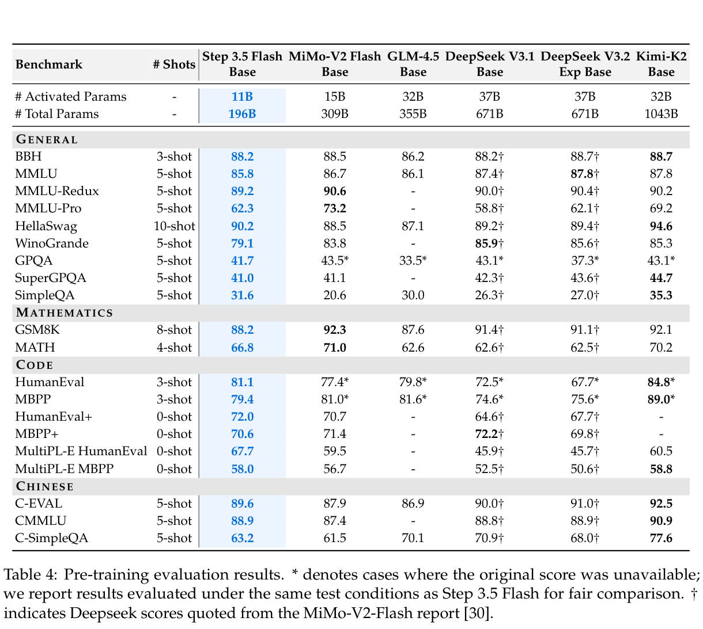
（3）编程，包括 HumanEval [147]、MBPP [148]、HumanEval+、MBPP+ [149] 和 MultiPL-E [150]。（4）中文理解，包括 C-Eval [151]、CMMLU [152] 和 C-SimpleQA [153]。
评估结果。表 4 总结 Step 3.5 Flash 在通用推理、数学、代码和中文基准上的预训练评估。虽然仅激活 11B 参数（总计 196B），Step 3.5 Flash 仍能与大得多的稀疏基线（激活 15–37B，总计 309–1043B）广泛竞争，展示出强有力的准确率与效率权衡。在核心通用基准上，Step 3.5 Flash 在 BBH 达到 88.2（距最高分不到 0.5），MMLU 达到 85.8。特别地，Step 3.5 Flash 在 SimpleQA 达到 31.6，超过 DeepSeek-V3.2-Exp Base 的 27.0，而总参数仅为 196B，对方则为 671B（约 3.4 倍总参数），凸显更强的单位参数预算能力密度。Step 3.5 Flash 还展示强大编程能力，包括 HumanEval 的 81.1、MultiPL-E HumanEval 的 67.7 和 MultiPL-E MBPP 的 58.0。总体而言，这些结果表明 Step 3.5 Flash 在单位激活计算量下提供强大性能，为下游推理与 agent 后训练建立坚实基础。
6.2 后训练评估
我们在代表性基准上评估 Step 3.5 Flash，包括面向推理的 HLE（文本子集）[154]、MMLU-Pro [139]、GPQA-Diamond [142]、AIME2025 [10]、HMMT [11]、IMO-AnswerBench [91]；编程相关的 LiveCodeBench-v6（2024.08–2025.05）[12]、CF-Div2-Stepfun4、SWE-Bench Verified [13]、SWE-Bench Multilingual [14]；agent 系列 \(\tau^2\)-Bench [15]、Terminal-Bench 2.0 [16]、GAIA [19]、BrowseComp [17]、xbench-DeepSearch [20]、BrowseComp-zh [18]、RESEARCHRUBRICS [21]；通用相关的 ArenaHard v2 [155]、IFBench [156]、MultiChallenge [157]；以及长上下文相关的 LongBench v2 [158]、MRCR [159]5、FRAMES [160] 和 RepoQA [161]。
我们进一步采用并行协调推理（PaCoRe）范式 [42]，研究 Step 3.5 Flash 在推理、通用和长上下文基准上的 test-time scaling 特性。利用 Step 3.5 Flash 极高的推理效率，该方法启动并行推理轨迹，通过多轮协调将其见解综合为更高保真解答，从而使推理容量与上下文限制解耦。具体而言，采用多轮 PaCoRe 轨迹配置 \(\vec K=[4,4,4,4]\)，在各基准上获得显著收益。
我们将最大序列长度保持为 256k，采用默认 decoding 配置，温度与 top-p 均为 1.0。在原始 128k 位置 embedding 基础上应用缩放因子 2.0 的 YaRN [162]，仅作用于全局 attention 层。所有方法均报告 pass@1 准确率，由每题多次独立生成的平均表现计算：AIME 2025、HMMT 2025 Feb.、HMMT 2025 Nov. 各 64 次；IMO-AnswerBench、LiveCodeBench、GPQA-Diamond、MultiChallenge 各 8 次；HLE 为 1 次，其他基准均为 4 次。更多细节见附录 E.2。
评估结果。表 5 将 Step 3.5 Flash 与广泛的强基线，围绕推理、代码 agent、通用 agent、长上下文理解和通用能力基准全面比较。虽然仅激活 11B 参数（总计 196B），Step 3.5 Flash 在广泛任务上展示强大表现，在 AIME 2025、HMMT 2025 Feb.、HMMT 2025 Nov.、IMO-AnswerBench 和 LiveCodeBench-v6 等推理密集型基准上尤为突出。它持续超过参数规模更大的开源模型，与 GPT-5.2 xHigh、Gemini 3.0 Pro 等前沿模型表现相当。特别地，Step 3.5 Flash 在 SWE-Bench Verified、Terminal-Bench 2.0、BrowseComp（使用上下文管理器）、GAIA 和 \(\tau^2\)-Bench 等 agent 评估上取得强大结果，凸显稳健的工具使用与长程决策能力。
7 局限
Token 效率。Step 3.5 Flash 实现前沿级智能，但目前达到相当质量需要比 Gemini 3.0 Pro 更长的生成轨迹。下一步，我们将剪枝并压缩思考过程，在保持相同竞争力的同时提升效率。
高效的全面精通。我们希望统一通才多面性与深度领域专长。为高效实现这一目标，正在推进 on-policy 蒸馏的各种变体，使模型以更高样本效率内化专家行为。
4 https://huggingface.co/datasets/stepfun-ai/CF-Div2-Stepfun
5 https://huggingface.co/datasets/openai/mrcr
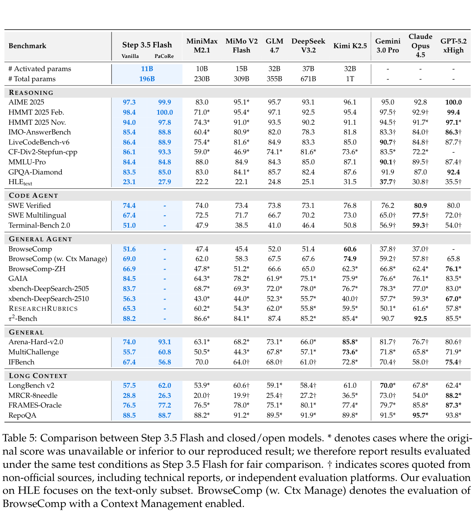
开放世界 agent 任务的 RL。尽管 Step 3.5 Flash 在学术 agent 基准上具有竞争力，但 agent AI 的下一个前沿要求将 RL 应用于专业工作、高级工程和科学研究中的复杂专家级任务。解决这些挑战，是部署真正具备自主性的 agent 的前提。
运行范围与约束。Step 3.5 Flash 针对编程和工作任务设计，但在分布偏移时稳定性可能下降。这通常发生在高度专业化领域，或长程多轮对话中，此时模型可能出现重复推理、混合语言输出，或时间与身份意识不一致。
贡献者
作者名单按名字的字母顺序排列。
Ailin Huang
Ang Li
Aobo Kong
Bin Wang
Binxing Jiao
Bo Dong
Bojun Wang
Boyu Chen
Brian Li
Buyun Ma
Chang Su
Changxin Miao
Changyi Wan
Chao Lou
Chen Hu
Chen Xu
Chenfeng Yu
Chengting Feng
Chengyuan Yao
Chunrui Han
Dan Ma
Dapeng Shi
Daxin Jiang
Dehua Ma
Deshan Sun
Di Qi
Enle Liu
Fajie Zhang
Fanqi Wan
Guanzhe Huang
Gulin Yan
Guoliang Cao
Guopeng Li
Han Cheng
Hangyu Guo
Hanshan Zhang
Hao Nie
Haonan Jia
Haoran Lv
Hebin Zhou
Hekun Lv
Heng Wang
Heung-Yeung Shum
Hongbo Huang
Hongbo Peng
Hongyu Zhou
Hongyuan Wang
Houyong Chen
Huangxi Zhu
Huimin Wu
Huiyong Guo
Jia Wang
Jian Zhou
Jianjian Sun
Jiaoren Wu
Jiaran Zhang
Jiashu Lv
Jiashuo Liu
Jiawen Luo
Jiayi Fu
Jiayu Liu
Jie Cheng
Jie Luo
Jie Yang
Jie Zhou
Jieyi Hou
Jing Bai
Jingcheng Hu
Jingjing Xie
Jingwei Wu
Jingyang Zhang
Jishi Zhou
Junfeng Liu
Junzhe Lin
Ka Man Lo
Kai Liang
Kaibo Liu
Kaijun Tan
Kaiwen Yan
Kaixiang Li
Kang An
Kangheng Lin
Lei Yang
Liang Lv
Liang Zhao
Liangyu Chen
Lieyu Shi
Liguo Tan
Lin Lin
Lina Chen
Luck Ma
Mengqiang Ren
Michael Li
Ming Li
Mingliang Li
Mingming Zhang
Mingrui Chen
Mitt Huang
Na Wang
Peng Liu
Qi Han
Qian Zhao
Qinglin He
Qinxin Du
Qiuping Wu
Quan Sun
Rongqiu Yang
Ruihang Miao
Ruixin Han
Ruosi Wan
Ruyan Guo
Shan Wang
Shaoliang Pang
Shaowen Yang
Shengjie Fan
Shijie Shang
Shiliang Yang
Shiwei Li
Shuangshuang Tian
Siqi Liu
Siye Wu
Siyu Chen
Song Yuan
Tiancheng Cao
Tianchi Yue
Tianhao Cheng
Tianning Li
Tingdan Luo
Wang You
Wei Ji
Wei Yuan
Wei Zhang
Weibo Wu
Weihao Xie
Wen Sun
Wenjin Deng
Wenzhen Zheng
Wuxun Xie
Xiangfeng Wang
Xiangwen Kong
Xiangyu Liu
Xiangyu Zhang
Xiaobo Yang
Xiaojia Liu
Xiaolan Yuan
Xiaoran Jiao
Xiaoxiao Ren
Xiaoyun Zhang
Xin Li
Xin Liu
Xin Wu
Xing Chen
Xingping Yang
Xinran Wang
Xu Zhao
Xuan He
Xuanti Feng
Xuedan Cai
Xuqiang Zhou
Yanbo Yu
Yang Li
Yang Xu
Yanlin Lai
Yanming Xu
Yaoyu Wang
Yeqing Shen
Yibo Zhu
Yichen Lv
Yicheng Cao
Yifeng Gong
Yijing Yang
Yikun Yang
Yin Zhao
Yingxiu Zhao
Yinmin Zhang
Yitong Zhang
Yixuan Zhang
Yiyang Chen
Yongchi Zhao
Yongshen Long
Yongyao Wang
Yousong Guan
Yu Zhou
Yuang Peng
贡献者（续）
Yuanhao Ding
Yuantao Fan
Yuanwei Lu
Yuanzhen Yang
Yuchu Luo
Yudi Zhao
Yue Peng
Yueqiang Lin
Yufan Lu
Yuling Zhao
Yunzhou Ju
Yurong Zhang
Yusheng Li
Yuxiang Yang
Yuyang Chen
Yuzhu Cai
Zejia Weng
Zetao Hong
Zexi Li
Zhe Xie
Zheng Ge
Zheng Gong
Zheng Zeng
Zhenyi Lu
Zhewei Huang
Zhichao Chang
Zhiguo Huang
Zhiheng Hu
Zidong Yang
Zili Wang
Ziqi Ren
Zixin Zhang
Zixuan Wang
附录
A 架构细节
表 6 总结 Step 3.5 Flash 的关键架构超参数。
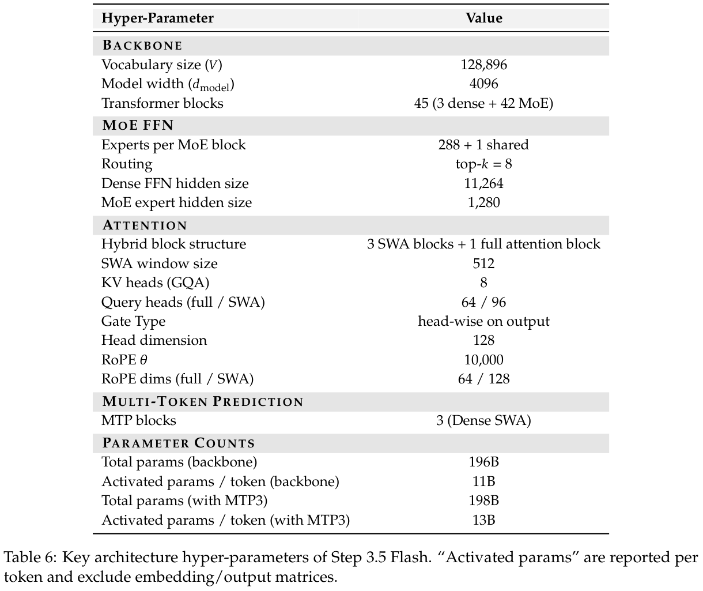
A.1 逐头 gated attention
每个 attention 头被分配一个轻量、依赖输入的标量门，使模型能够以几乎可以忽略的计算开销，在混合布局内动态调节信息流。
形式上，对一个维度为 \(d\) 的（单个）头，以 \(\boldsymbol q_i,\boldsymbol k_j,\boldsymbol v_j\in\mathbb R^d\) 表示位置 \(i\) 的 query 向量，以及位置 \(j\) 的 key、value 向量，则缩放点积分数 \(s\)、对应 attention 权重 \(\alpha\) 和输出 \(\boldsymbol y\) 计算如下：
给定位置 \(i\) 的输入表示 \(\boldsymbol x_i\)，我们计算逐头门 \(g_i\)，调节头输出：
其中 \(\sigma(\cdot)\) 是 sigmoid 函数，\(\boldsymbol w_{\mathrm{gate}}\) 是可学习向量。
逐头 gated attention 可视为向 attention 机制引入依赖输入的 sink token [33]。将 \(\sigma(g)=1/(1+\exp(-g))\) 代入公式（5），得到
其中 \(\exp(-g_i)Z_i\) 在 softmax 归一化项中充当依赖输入的 sink 质量。如第 2.3 节所示，这种自适应形式持续优于固定（不依赖输入）的 sink token。
A.2 Attention 增强方法的速度基准
我们使用 MTP-3 开展模拟，评估理想工作负载下两项增强措施的延迟开销。表 7 展示理论 FLOPs 与延迟的相对增幅。增加 SWA query 头数会略微增加 FLOPs，但对延迟影响更小。这是因为 query 与 kv 的比例为 12，即使考虑 MTP-3，SWA 仍处于 IO 受限区间。逐头门控由于轻量，FLOPs 和延迟均没有明显差异。
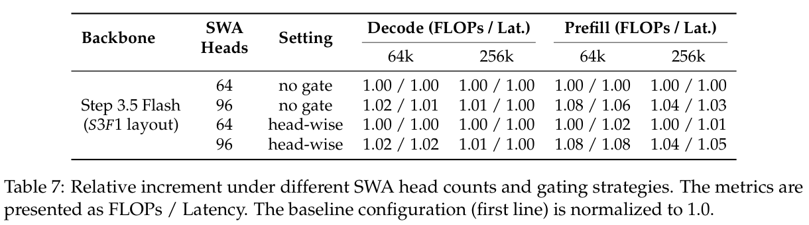
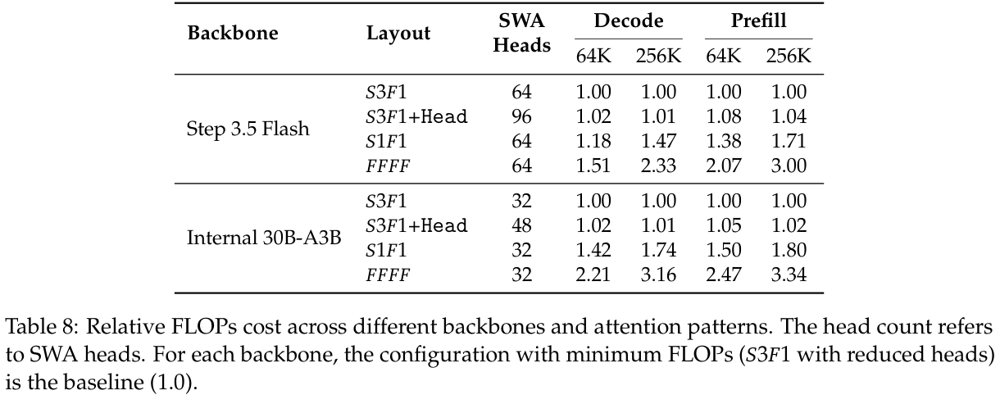
A.3 元 token
近期文献 [163–165] 从理论与实证上表明，在预训练序列前添加结构化元数据，可以提高数据效率、加速收敛：通过暴露高层属性（例如模态、语言、领域），元数据提供全局线索，降低对后续内容的不确定性，从而使下一 token 预测更容易。
受这一范式启发，我们为每个训练样本关联一个人类可读格式的元数据字符串 \(M\)，包括内容类型（例如 Code、Book、Paper、Web）、语言（例如 EN、ZH）、领域和来源。随后将 \(M\) 添加到原 token 序列 \(\boldsymbol x\) 前，形成单个训练序列 \(\boldsymbol s=[M;\boldsymbol x]\)。预训练时，模型最大化 \(\boldsymbol s\) 的似然：
初始约 3.8T token 阶段之后，我们保留上下文中的 \(M\)，但在损失中掩码其位置，继续预测实际内容 token：
我们推测，此时模型已经学会有效使用元数据作为条件信号。因此，掩码元数据损失能够将优化压力全部分配给实际内容 token，同时仍受益于以数据特征为显式条件。
A.4 预训练消融细节
我们开展受控预训练消融，隔离（i）不同混合 attention 布局，以及（ii）sink token 与逐头 gated attention 的影响。
混合 attention 布局。我们采用 30B-A3B MoE 架构，在固定 token 预算下评估不同布局的下游影响。训练遵循严格多阶段流程：30B token warmup，随后 1T token 主预训练、300B token 冷却，再加 100B token 长上下文专门化，总计约 1.4T token。随后在降采样为 0.1 倍的数据集上开展 SFT。完整细节见表 9。
门控与 sink 对比（扩展规模设置）。我们在约 250B token 上预训练 100B-A10B MoE，比较更大规模下的 sink token 与逐头门控。
架构消融的预训练结果见表 2、表 10，采用第 6.1 节评估协议。具体而言，GPQA [142] 使用 5-shot，HumanEval [166] 与 MBPP [167] 使用 3-shot 提示。
表 1 的后训练结果按以下方式汇总：
- Reasoning：MMLU-Pro [139]、GPQA-Diamond [142]、LiveCodeBench v6 [12] 与 LiveBench [168] 的平均值。
- Math：AIME 2024 [169]、AIME 2025 [170]、HMMT 2025 Feb. [171] 与 CNMO 20246 的平均值。
- Code：CF-Div2-Stepfun 与 LiveCodeBench v6 [12] 的平均值。
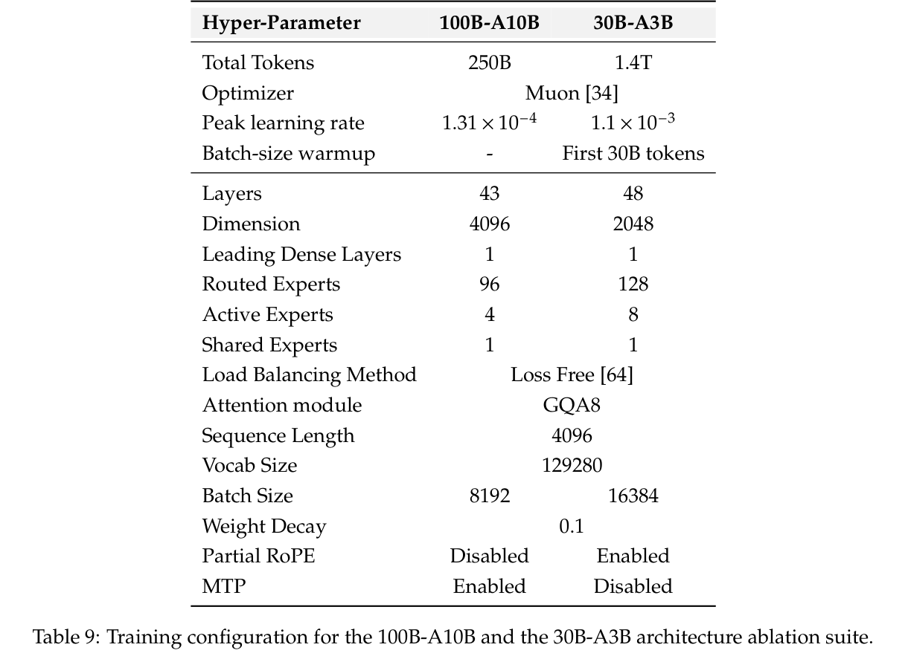
- Sci：由 GPQA-Diamond [142] 表示。
- General：IFEval [172]、IFBench [156]、WildBench [173]、Arena-Hard [155] 与 MultiChallenge [157] 的平均值。
- LongCtx：六个基准级平均值的平均值：（i）RULER [174] 在 8k–128k 各上下文长度的平均分，（ii）LongBench v2 [158] 的 Short、Medium 子集平均分，（iii）HELMET [175] 在 8k–128k 各上下文长度的平均分，（iv）GSM-Infinite [176]，（v）FRAMES [160] 总分，（vi）RepoQA [161] 总分。
表 1、表 10 显示，普通 \(S^3F^1\) 布局在通用预训练基准上落后于全局 attention 基线，并持续降低 SFT 质量（例如 BBH：−4.3；SFT 平均：−0.7）。增加 SWA query 头数显著弥合差距（例如 MMLU-Pro：+3.7；SFT Reasoning：+0.4），仅在 SFT Code 有小幅回退（−0.6），同时在多个指标上达到或超过全局 attention 基线。表 2 进一步表明，相比 sink token，逐头 gated attention 将平均分从 62.5 提升至 64.4（+1.9）。
B 局部激活爆增的详细分析
为研究局部激活爆增的根本原因，我们分析所有层中触发最大专家激活的 token，识别出两种不同的大激活模式：（1）特定词汇项，例如特殊 token 和标点，通常引发较大但不极端的激活，尤其是在浅层。我们不将这种模式视为失效模式，因为没有快速增长，它可能充当内部语义
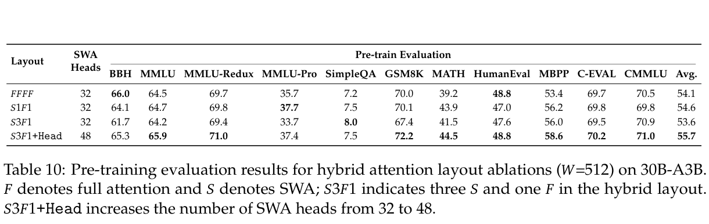
建模机制 [60,177]（接上页）。另一种模式是（2）某些高频二元组在第一个 token 上触发极大激活，这正是我们研究的失效模式。其触发因素有多个：二元组出现频率足够高，MoE FFN 又足够细粒度，使一个专家可以专门处理该二元组，而不受负载均衡机制约束。这种专门化形成捷径：专家一旦激活，输出就变成确定性的，其他网络不再影响预测。
虽然寻找捷径是最小化损失的合理方法，但在采用 pre-norm 架构 [76,77] 的 MoE 模型中，存在一种简单而病态的方式实现确定性预测，具体如下。模型最终表示是所有层输出之和，再经过 RMSNorm。可将其表示为专家与 attention 层输出的组合：
其中 attn、MoE、expert 表示各模块的输出隐藏状态，\(L\)、\(E\) 分别表示层数与专家数。简单解决方式是无限增大 \(\operatorname{expert}_{\mathrm{outlier}}\)，于是
其中我们将 \(\boldsymbol h_{\mathrm{outlier}}\) 分解为幅度 \(c\) 和表示方向的单位向量 \(\hat{\boldsymbol h}_{\mathrm{outlier}}\)。
Step 3.5 Flash 的专家架构 SwiGLU [78] 提供了一种即使权重衰减有效抑制权重范数，也能生成大输出的方式。其定义如下：
我们分析 \(W_{\mathrm{gate}}\boldsymbol x\) 与 \(W_{\mathrm{up}}\boldsymbol x\) 的激活范数，发现 outlier 专家与正常专家没有显著差异。然而，逐元素乘积会产生异常输出，在 outlier 专家中满足
只有当 \(\operatorname{SiLU}(W_{\mathrm{gate}}\boldsymbol x)\) 与 \(W_{\mathrm{up}}\boldsymbol x\) 高度对齐，且集中在极少维度时，才可能出现这一情况。因此，由于输入稀疏，仅使用 \(W_{\mathrm{up}}\) 的少量行。该观察使我们更倾向激活裁剪而非权重裁剪：激活数值性质直接造成爆增与稀疏性，激活裁剪能够及时应对这些问题。此外，正常激活很少超过阈值，因此激活裁剪的负面影响可以忽略。
使用 Muon 优化器时，SwiGLU 等门控线性单元容易发生 logit 爆炸。这种脆弱性源于与 [5] 报告的 attention 爆炸类似的机制。对于专门处理特定二元组的 outlier 专家，路由到它的隐藏状态预期与其路由器 embedding 高度对齐。我们将路由器 embedding 输入 outlier 专家，并直接根据专家输出预测，以验证此点。预测分布与真实数据和整个网络的表现一致。结合过于单一的训练目标（预测二元组的第二个 token），我们认为，outlier 专家参数 \(W_{\mathrm{gate}},W_{\mathrm{up}},W_{\mathrm{down}}\) 的 gradient 不仅异常低秩（记为 \(r\)），而且如第一个因素所分析，持续指向强调幅度、而不旋转的方向。设参数矩阵 \(W\in\mathbb R^{N\times N}\) 的更新矩阵为
跨优化步骤累积更新会迅速增大低秩信号的奇异值，导致权重参数爆炸。在 GLU 结构中，强对齐时 \(\|\operatorname{SiLU}(W_{\mathrm{gate}}\boldsymbol x)\cdot W_{\mathrm{up}}\boldsymbol x\|\) 对谱范数取平方，使这一过程更剧烈。此外，Muon 完全消除 gradient 幅度的影响。在爆增过程中，RMSNorm 会减小大输入的 gradient。使用 Adam 时，其 \(\epsilon\) 在学习率自适应期间充当阈值，过滤小 gradient，从而阻碍这一过程。相比之下，Muon 始终有效正交化 gradient，带来更激进的更新。
C Step 预训练数据基础
C.1 知识数据构建
C.1.1 StepCrawl
除标准网络规模数据集（例如 CommonCrawl）外，我们开发内部抓取整理系统 StepCrawl，旨在大规模获取高质量、多样 token。StepCrawl 是高信号网页和文档类内容（尤其 PDF）的主要来源，后者常包含长篇、高信息密度材料。
StepCrawl 的关键组件，是由 WebOrganizer 式模型 [178] 支持的站点和 URL 选择层。我们调整 WebOrganizer 引入的能力，并进一步微调适配自身流程的版本。抓取时，每个获取的网页都由模型分析，形成轻量 LM 参与反馈循环：（i）过滤 SEO 驱动及其他低价值网页；（ii）通过平衡站点类别，指导抓取预算分配（例如避免不成比例地抓取工具、电商站点），保持语料多样性并减少主题偏斜。实践中，在该质量与多样性感知调度策略下，StepCrawl 每天处理约 1B 网页。
所有抓取活动严格遵守 robots.txt 和站点特定访问政策。收集内容随后经过多阶段过滤（质量评分、去重、清理），确保仅保留高价值、符合政策的数据用于训练。
C.1.2 质量精炼与分层
质量分层。受 Nemotron-CC [179] 式质量分桶启发，我们将内部网络数据划为质量层级，优先采样较高层级。每篇文档使用六个轻量评分器／分类器组成的集成标注，再集成各评分器的层级分配。最终方案保留 High／Medium-High／Medium，丢弃 Medium-Low／Low，在消融中显著提升 token 效率。对于图书和论文语料，我们应用相同分层，但仅在退火阶段将保留范围限制为 High／Medium-High，以最大化多样性。除共享的六评分器集成外，还加入针对 STEM 和知识密集内容的领域过滤器，并降低过度代表领域的采样比例，确保均衡代表性。
基于 embedding 的聚类再均衡。我们使用基于 embedding 的语料均衡，系统减少冗余并缓解分布偏斜。具体而言，对大规模中英文网络数据生成 embedding，执行 k-means 聚类（100k 多个簇），降低数据量占比过大的簇的采样率。消融中，冷却阶段这种簇级再均衡改善了广泛基准。
知识密集内容挖掘与增强。我们基于上述共享 embedding 表示，以轻量两阶段流程构建专门知识子集。首先，使用经过整理的高价值实体、概念和关系清单，在 embedding 空间从完整语料检索知识密集文档与段落；这些候选由知识密度模型和简单覆盖启发式规则排序。其次，对部分检索内容应用受控改写、问答合成等针对性变换，提升可学习性。生成样本重新混入训练数据，提高有效知识信号密度。消融观察到该流程持续获益，对收益的详细因果分析留待未来。
C.2 代码数据
C.2.1 纯代码
我们使用修改版 OpenCoder 过滤规则 [80] 精炼内部编程数据集，通过经过校准的放宽，平衡质量与多样性。流程对每篇文档应用 OpenCoder 过滤器，产生一组“命中”，每次命中代表违反一条启发式规则（提示潜在噪声）。按命中数划分语料：hit0 为干净文档（零违反），hit1 为一次违反，以此类推。
内部消融揭示清晰的质量与多样性权衡：严格过滤（例如仅 hit0）会过度裁减语料，而不过滤会引入过量噪声。我们发现 hit0–6 配置（接受最多违反 6 条规则的文档）整体基准性能最佳，相比原始严格约束，保留了更丰富的高信号代码。
C.2.2 PR／Issue／Commit 数据
为增强软件工程能力，我们从超过 10 星标的 GitHub 仓库构建包含 PR、issue 和 commit 的全面数据集。严格过滤仓库流行度与内容质量，并使用 LLM 生成缺失 issue 描述，形成 500 万样本基础。在此基础上，派生四个训练子集：
（1）基础 PR／Issue／Commit 数据：通过 GHArchive 与 GitHub API 抓取数据，包括完整 commit 历史。提取改动，并将一小部分样本与 git diff 真值验证，再过滤为 20 多种主流语言（例如 Python、Java、C++）。严格针对 SWE-Bench Verified [13] 和 SWE-Bench Multilingual [14] 去重，防止泄漏。
（2）拼接 PR 对话数据（90B token）：应用两个受 Agentless 启发的模板 [82]，生成 90B token 代码编辑训练数据：（1）文件定位：给定问题描述和仓库结构，识别目标文件路径；（2）代码修复：给定问题描述和文件内容，通过 SEARCH/REPLACE 块生成精确修改。
我们将这 90B 代码编辑数据纳入两个训练阶段，采用不同掩码策略：预训练退火阶段仅掩码模板框架；中期训练转为聊天对话，掩码用户提示词。内部消融显示，冷却和中期训练阶段，SWE-Bench Verified 与 SWE-Bench Multilingual 均持续提升。
（3）重写的推理导向数据（12B token）：从基础数据的 Python 子集，通过 LLM 改动类型标注派生 bug 修复样本。采用两种简洁重写策略：（1）推理重建：LLM 重建 PR 作者的问题解决过程（问题分析、根因识别、方案设计、代码实现），注入 PR 对话格式。用规则与 LLM 验证过滤幻觉／不一致轨迹。（2）主动阅读笔记：将 PR／issue／commit 数据转为结构化学习提纲（动机、根因、设计决策、见解），再合成为连贯技术笔记。这些重写数据（约 12B token）用于中期训练，使 SWE-Bench Verified 进一步提升。
（4）基于环境的种子数据。利用附录 E.2.2 所述环境构建流程，从原始 PR、issue、commit 记录整理可执行环境。严格过滤候选，确保包含测试补丁，并通过严格规则验证以保证环境可复现。此外，对选定 issue 有针对性地重写，增强数据质量与覆盖。最终数据集包含数十万种子样本，包括问题描述、代码改动、测试函数，是增强 agent 编程能力的基础，推动下游 agent 任务显著提升。
C.3 数学与 STEM 数据
为了增强推理能力并从知识中激发智能，我们整理大规模数学与 STEM 数据集。除先前工作 [180,181] 使用的标准 Common Crawl 数据外，还用内部 StepCrawl 获取海量额外数学相关数据。具体而言，我们实施受 MegaMath [181] 启发的过滤流程，结合内部分类器集成与 FineMath [182]，保留不同于 Common Crawl 的数千亿数学相关 token。我们进一步收集包含习题、测验和教学内容的多样化 100M 样本教育数据集。这一集合连接学术理论与专业应用，覆盖从 K-12 数学／物理／化学、人文，到成人职业考试（CPA、法律）等领域。早期实验确认，解题数据对优化预训练 token 效率至关重要。
C.4 数据基础设施
我们的数据构建整理流程运行在高吞吐量内部基础设施上，专为大规模去重、挖掘和模型推理过滤设计。使用混合 CPU／GPU 集群，以及 Spark、Ray 等分布式框架，执行大批量处理（例如基于 MinHash 的去重）和模型驱动整理（例如 embedding 生成与分类器／LM 推理）。存储层覆盖对象存储（OSS）、HDFS 和 JuiceFS，支持原始语料与中间产物的高效读写。
C.5 数据消融设置
为严格评估数据质量及整理策略影响，我们采用 30B-A3B MoE 架构，以与主线设置一致的 Muon 优化器训练（表 9），开展广泛消融。遵循严格 token 效率协议，所有实验固定训练预算。模型使用第 6.1 节全面基准，以及一系列精心设计的留出压缩（困惑度）测试集评估。我们观察到，压缩指标通常能更直接衡量知识容量，提供与主流基准互补的信号。
30B-A3B MoE 的内部实验表明，相比更小代理模型，它具有更优性能和稳定性。小模型计算更便宜，却常常无法捕捉复杂推理细节，也缺乏记忆长尾模式的容量，导致对数据重复产生人为偏好。实证上，30B-A3B 规模更稳定，也更忠实反映全规模趋势。
D 后训练细节
本节介绍将基础模型精炼为高性能 agent 系统的后训练过程，包括严格数据处理与质量控制下的 SFT，以及进一步提升推理、工具使用和泛化的大规模 RL。
D.1 SFT 细节
D.1.1 SFT 数据处理流程
所有领域都采用统一数据处理流程，强调答案可验证性、推理质量和执行真实性。为确保整体数据完整性，聚合数据经过严格的两阶段过滤过程：
- 基于规则的过滤：删除呈现退化模式的低质量数据，例如无限重复、有害内容和个人身份信息。
- 基于模型的过滤：用专门模型检测并过滤语言不一致的数据。识别、删除不自然混合语言样本，显著改善语言纯净度与整体质量。
- 去污染：全面针对基准去污染，防止测试集泄漏。包括精确匹配（掩码数字以捕获数值修改）和 \(N\)-gram 匹配。
最终得到 871k 样本、总计 7.23B token 的精炼数据集。SFT 数据详细分布见表 3。
D.2 RL 细节与消融
本节详细介绍大规模 RL 后训练，涵盖数据整理、异步搜索 agent 训练，以及稠密与 MoE 模型上的消融。
D.2.1 数据整理
我们汇集开源集合与竞赛档案中的问题，整理 RL 训练数据，覆盖竞赛编程、STEM 和通用 RLVR 训练的合成数据。为防止污染，严格排除 2024–2026 年举行的竞赛题。进一步增加：（i）涉及 11–13 位整数的合成算术题；（ii）为代码任务合成额外测试用例的生成器—验证器流程；（iii）谜题和指令遵循等通用推理任务的合成环境。
采用两阶段过滤。首先，确定性规则裁减去除含图片、外链或没有唯一最终答案的开放式要求的提示词。其次，基于准确率的过滤排除过于简单或退化的问题。训练时，每个 batch 按预定义采样概率从不同领域构建。
D.2.2 奖励系统
可验证奖励。对于 STEM 任务，我们使用 gpt-oss-120b [33] 作为验证模型，采用以下结构化提示词（原为中文），严格评估最终答案正确性。对于代码任务，使用沙箱根据测试用例验证代码执行，采用软奖励。
你是一名严格的评分员。下面给出题目、学生答案与参考答案。请依据以下规则判断学生答案是否正确。
评分流程：
- 整体检查：如果学生响应不完整、缺乏明确最终答案，或多次重复内容 → 判错。
- 最终答案匹配：提取学生明确的最终答案，与参考答案比较：语义或数学上完全等价 → 进入过程检查；若涉及数值计算，且差异仅来自舍入 → 进入过程检查；其他 → 判错。
- 过程检查：仔细验证每个推理步骤：若存在错误、矛盾、明显偏离题目，或学生只复制题目而无实质解答 → 判错；若解答过程正确、清晰、一致 → 判对。
- 格式要求：若题目要求特定格式（例如单位、逐步回答或显式方程），而学生未满足 → 判错。
- 多个子问题：若题目包含多个子问题，学生必须全部答对才能判对。
- 其他情形：若上述规则未涵盖，从学生是否真正会解题的角度整体判断。
输出要求：最终输出必须严格为以下之一：
<correct> True </correct> <correct> False </correct>现在开始：
<question> {question} </question> <student_answer> {student_answer} </student_answer> <reference_answer> {reference_answer} </reference_answer>
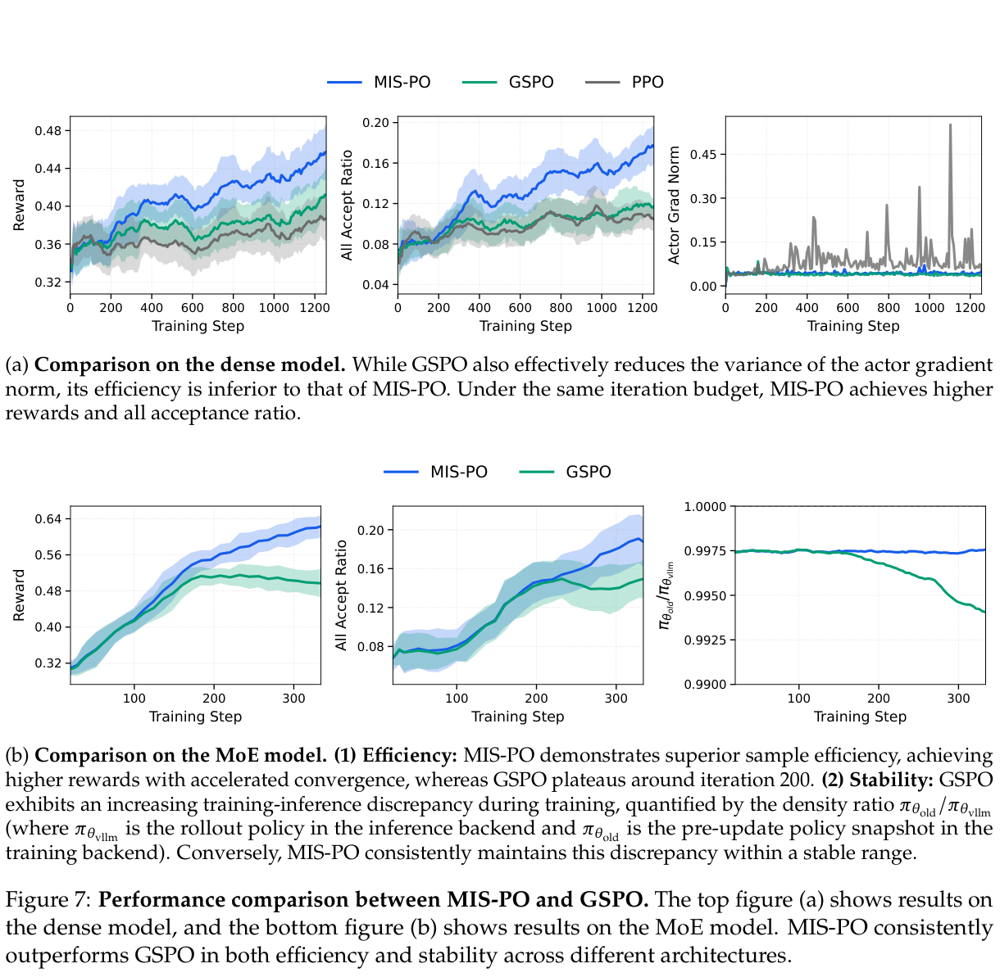
D.2.3 RL 消融细节
MIS-PO 与 GSPO。为严格验证方法有效性，我们在稠密和 MoE 架构上，将 MIS-PO 与 GSPO [36] 比较。选择 GSPO 作为主要基线，是因为它是一种有竞争力的策略，能够减少重要性采样固有的 gradient 方差。实现中，通过将广义重要性采样机制整合到 actor 损失，我们把原始 GSPO 估计器扩展至 actor-critic 设置。具体而言，用轨迹级比率的几何平均值，取代标准 token 级重要性采样比率。actor 损失如下（\(\gamma=\lambda=1\)）：
为保证公平比较，我们采用 MIS-PO 相同的 token 与样本级掩码策略，排除训练与推理显著不匹配的数据。对于裁剪比率 \(\epsilon\)，在 \(\{1,2,3,4\}\times10^{-4}\) 上网格搜索。所有实验采用 \(\epsilon=10^{-4}\)，主要因为它在 200 步 RL 训练后取得最佳基准性能。此外，该设置产生约 15% 的裁剪比例，与原始 GSPO [36] 一致。
图 7 展示比较结果。实证上，MIS-PO 的样本效率和可扩展性优于 GSPO。关键在于，MIS-PO 有效将训练与推理不匹配限制在稳定范围内。这种稳定性对于 MoE 的大规模 RL 训练尤其重要，因为基线 GSPO 无法保持持续收敛。
MoE 上的延长训练动态。为进一步验证可扩展性，我们在具有挑战性的数据集上，对 MoE 模型开展更长的 MIS-PO 训练。如图 8 所示，模型奖励持续上升，actor gradient 范数稳定，熵水平控制良好。这些结果从实证上确认 MIS-PO 对大规模 MoE off-policy RL 训练可靠。
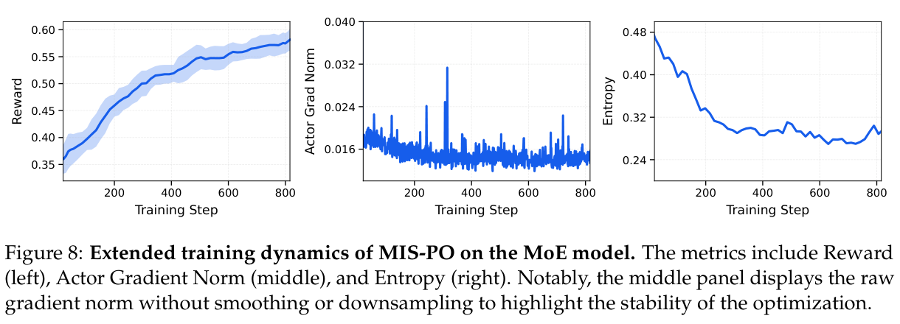
D.2.4 搜索 agent
训练架构方面，早期 client–server 单步 off-policy 框架严重受长尾延迟限制：约 5% 样本占据约 80% 生成成本。然而，我们观察到策略对陈旧性具有强稳健性，即使延迟约 20 步，仍保持稳定性能。因此，采用 FullyAsync 范式，将生成与更新解耦为完全异步过程。此外，为减少多轮交互推理开销，实施粘性调度，同一会话始终派发到同一节点，最大化 KV cache 复用。总体而言，该配置在保持训练稳定的同时，实现约 10 倍效率收益。
整个训练过程中，FullyAsync 展示稳健稳定性：奖励持续增加，截断重要性采样（TIS）的截断率保持在可控范围，表明异步引入的策略漂移有限。值得注意的是，不同于“从零 RL”在训练预算上的有限可扩展性，中期训练注入任务相关知识与工具使用先验，使 RL 中性能增益明显更大，能力涌现更加稳定。
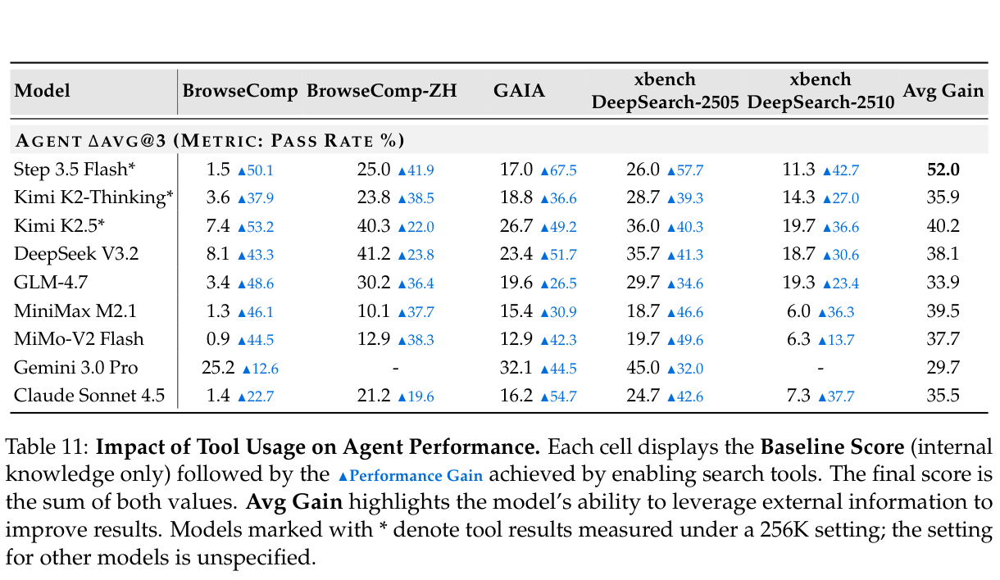
讨论。为严格评估独立于参数记忆的 agent 能力，我们关注工具使用增益，定义为：
该指标将模型固有知识与动态利用外部工具的能力解耦。如表 11 所示，Step 3.5 Flash 利用外部信息的能力最稳健，取得最高平均增益（52.0），在 GAIA、xbench-DeepSearch 等复杂基准上显著领先。
这种区分至关重要，因为 BrowseComp 等基准上的高绝对分数，有时来自强内化知识，而非有效搜索策略。高性能模型的较小 \(\Delta_{\mathrm{tool}}\) 含义模糊：可能表示高效率（模型已“知道”答案），也可能表示无法有效利用工具改善结果。相反，较大 \(\Delta_{\mathrm{tool}}\) 明确表明模型擅长通过检索弥补知识缺口。因此，我们认为未来优化不应仅追逐更高绝对分数（“刷榜”），而应在长上下文、证据关键场景中最大化 \(\Delta_{\mathrm{tool}}\)。这能够确保 agent 真正掌握信息检索与推理过程，而非过拟合静态知识或基准痕迹。
D.3 tool-integrated reasoning 与并行推理
本节介绍 Step 3.5 Flash 用于 test-time scaling 的两种主要方法：tool-integrated reasoning 与并行推理。
Tool-integrated reasoning。对于复杂推理任务，我们将模型与 Python 解释器结合，支持工具辅助推理。在该框架中，模型在沙箱内迭代思考并执行代码，完成计算、模拟与可视化。实验在 AIME 2025、HMMT 2025、IMO-AnswerBench、GPQA、HLEtext 和 ARC-AGI-1 上评估，轮次限制为 100。如表 12 所示，tool-integrated reasoning 显著
提升了挑战性数学、STEM 和谜题基准上的性能，凸显 Step 3.5 Flash 先进的 agent 推理能力（接上页）。
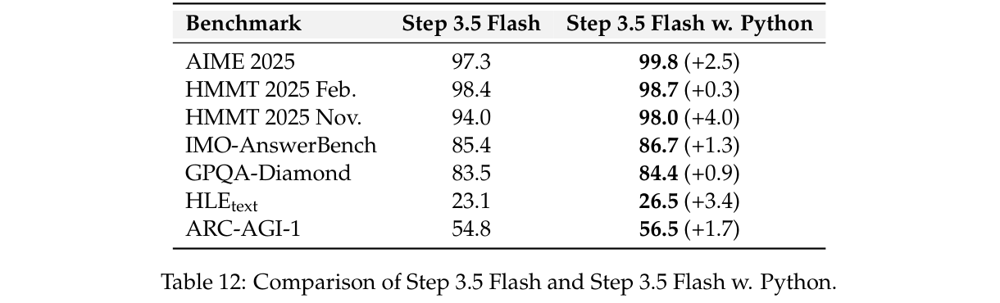
工具集成的并行推理。我们初步探索将 PaCoRe 扩展到多轮交互环境。按设计，PaCoRe 保留标准 LLM 消息接口，因此能够无缝整合进已有的多轮工具交互 agent 框架。为适配这一环境，我们实现表 14 所示感知状态的输入序列化协议。
我们使用配备 Python 解释器的 Step 3.5 Flash，在 GPQA、HLEtext 上评估该方法。如表 13 所示，将并行推理扩展到这些 agent 循环，能够相较标准推理基线显著提升性能。这些发现表明 PaCoRe 能有效泛化到需要交互反馈的环境，为 agent test-time scaling 提供有前景的方向。
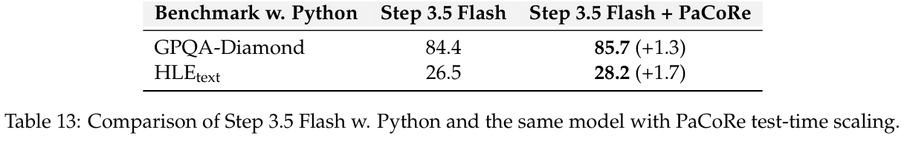
E 详细评估协议与提示词
本节提供评估套件实现细节，说明不同基准使用的具体提示词模板、少样本配置和裁判模型。对于长上下文或推理任务中的复杂指标，还详细说明底层计算逻辑与评分标准，确保可复现。以下模板中，{question} 表示文本问题描述的占位符，其他占位符（例如 {test}、{context}）表示任务特定信息。
E.1 预训练模型评估细节
E.1.1 通用语言理解与推理基准
BBH。采用 BBH [136] 官方 CoT 提示词7，仅将 "Q:"、"A:" 替换为 "Problem:"、"Solution:"，如下：
7 https://github.com/suzgunmirac/BIG-Bench-Hard/tree/main/cot-prompts
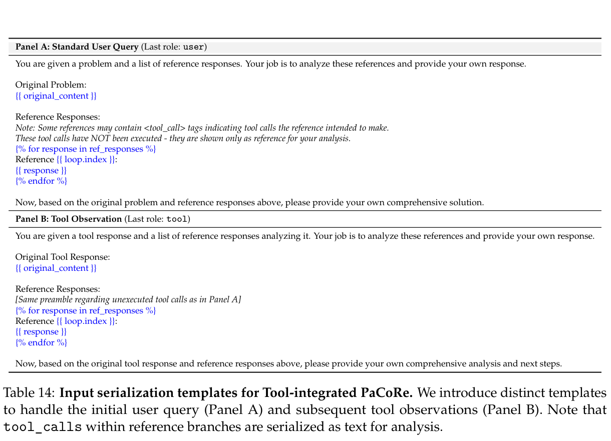
问题（Problem）：
{question}
解答（Solution）：MMLU。采用 MMLU [137] 官方评估指标，5-shot。使用以下任务专用系统提示词：
以下是关于 {category} 的多选题（含答案）。
对应问题提示词结构如下：
{question}
答案（Answer）：MMLU-Redux。采用 MMLU-Redux [138] 官方评估指标，5-shot。使用以下问题提示词：
回答问题，并将选项（A/B/C/D…）置于\boxed{}内。{question}
MMLU-Pro。遵循 MMLU-Pro [139] 官方评估指标，5-shot。所有评估使用以下系统提示词：
以下是关于 {category} 的多选题（含答案）。请逐步思考，最后以 "The answer is (X)" 格式输出答案。
问题提示词结构如下，最后句号后特意保留一个空格：
问题（Question）：{question}
答案（Answer）：让我们逐步思考。值得注意的是，我们观察到原始 MMLU-Pro 数据集中部分问题（12,102 道中的 470 道）在真值选项前含有不一致的前导空格。我们明确移除这些空格，减轻潜在格式偏差，确保评估一致性。
HellaSwag。采用 HellaSwag [140] 官方评估指标，10-shot。使用以下问题提示词：
问题（Question）：{question}
A. {option_0}
B. {option_1}
C. {option_2}
D. {option_3}
答案（Answer）：WinoGrande。采用 WinoGrande [141] 官方评估指标，5-shot。问题提示词明确呈现二元选项：
问题（Question）：{question}
选项（Options）：
A. {option_0}
B. {option_1}
答案（Answer）：GPQA。采用 GPQA [142] 官方评估指标，5-shot。问题提示词明确呈现选项：
问题（Question）：{question}
选项（Options）：
A. {option_0}
B. {option_1}
C. {option_2}
D. {option_3}
答案（Answer）：让我们逐步思考。SuperGPQA。采用 SuperGPQA [143] 官方评估指标，5-shot。问题提示词采用 chain-of-thought（CoT）结构，每个少样本示例都包含通向最终答案的逐步推导：
问题（Question）：{question}
答案（Answer）：让我们逐步思考。SimpleQA。采用 SimpleQA [144] 官方评估指标，5-shot。由于 SimpleQA 要求开放式短回答，评估使用基于 LLM 的判断，具体采用 gpt-oss-120b [33] 作为裁判模型。问题提示词为简洁问句：
问题（Question）：{question} 答案（Answer）：E.1.2 数学推理基准
GSM8K。采用 GSM8K [145] 官方评估指标，8-shot。使用以下模板引导 CoT 推理：
Q: {question}
A: 让我们逐步思考。MATH。采用 MATH [146] 官方评估指标，4-shot。问题提示词用显式问题和解答分隔符：
问题（Problem）：{question}
解答（Solution）：E.1.3 编程基准
HumanEval。采用 HumanEval [147] 官方评估指标，3-shot。问题提示词包含三个真值示例，为代码生成提供上下文指导：
# Below are the ground-truth solutions:
def add_two_numbers(a, b):
""" Given two numbers a and b, return the sum of a and b. """
# get the sum of a and b
sum_of_a_and_b = a + b
return sum_of_a_and_b
def reverse_list(some_list: list) -> list:
""" Given a list, return a reversed copy of the list. """ new_list = []
# iterate over the list
for item in some_list:
# insert item into new list
new_list.insert(0, item)
return new_list
def fast_reverse_list(some_list: list) -> list:
""" Given a list, return a reversed copy of the list. Be fast! """
# use faster built-in reverse
some_list.reverse()
return some_list
{question}MBPP。遵循 MBPP [148] 官方评估指标，3-shot。
HumanEval+。遵循 HumanEval+ [149] 官方评估指标，3-shot。
MBPP+。采用 MBPP+ [149] 官方评估指标，zero-shot。使用结构化指令提示词，明确任务要求，并包含示例测试用例用于对齐：
你是一名 Python 编程专家，以下是你的任务：
{question}
你的代码应通过测试：
{test}
以下是对应代码：
```pythonMultiPL-E。采用 MultiPL-E [150] 官方评估指标，zero-shot。使用官方测试用例判断生成代码。
E.1.4 中文理解基准
C-Eval。采用 C-Eval [151] 官方评估指标，并加入 5-shot 设置。使用以下系统提示词：
你是一个中文人工智能助手，以下是中国关于{category}考试的单项选择题，请选出其中的正确答案。
对应问题提示词如下：
{question}
答案：CMMLU。采用 CMMLU [152] 官方评估指标，并加入 5-shot 设置。使用以下系统提示词：
你是一个中文人工智能助手，以下是中国关于{category}考试的单项选择题，请选出其中的正确答案。
对应问题提示词如下：
{question}
答案：C-SimpleQA。采用 Chinese SimpleQA [153] 官方评估指标与基于 LLM 的判断协议。加入 5-shot 设置，使用 gpt-oss-120b [33] 作为裁判模型。问题提示词如下：
问题：{question}
答案：E.2 后训练模型评估细节
本节详细说明评估后训练模型在不同 agent 任务上的协议。评估涵盖代码和通用 agent 场景，包括软件工程、终端交互、深度搜索、研究工作流和现实工具使用。在严格控制环境和推理预算的条件下报告标准化指标，以确保跨基准比较公平、稳定。
E.2.1 推理基准
CF-Div2-Stepfun。近期研究和先进基准强调，必须用新鲜的竞赛级题目评估模型 [183,184]。我们采用自建 CodeForces Div.2 基准8，评估模型竞赛编程能力。基准包含 53 道来自 2024 年 9 月至 2025 年 2 月官方 CodeForces Div.2 竞赛的题目。我们开发使用本地评分机制的离线评估框架，替代实时在线提交，并尽力构建与原始用例相似的测试。具体而言，首先生成足够的小规模用例以覆盖评估正确性，随后添加随机数据进行大规模测试。最后，通过分析真实用户常见错误模式和被“hack”的提交，对抗构建边界情况。一些边界情况还通过压力测试自动生成：不断生成大量用例，直到某个用例能区分错误与正确提交。为验证可靠性，我们运行原竞赛中选出的正确提交及代表性错误提交。评估器将 100% 已接受提交正确识别为“通过”，同时准确标出 92.45% 错误提交。
8 https://huggingface.co/datasets/stepfun-ai/CF-Div2-Stepfun
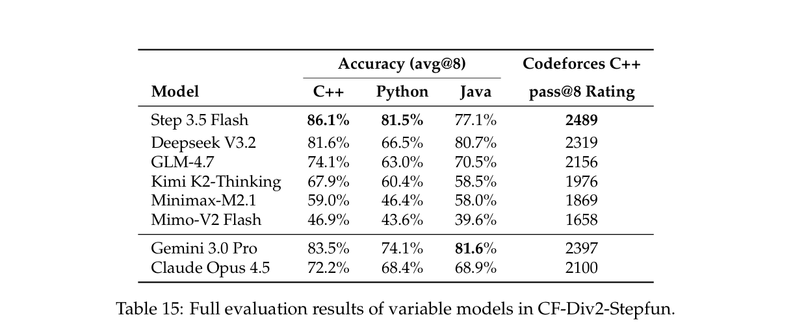
每道题采样 8 个响应，报告平均准确率。使用的用户提示词如下：
你是一名编程专家。给定一道竞赛级编程题，你需要编写 {LANGUAGE} 程序解决。可以先概述思考过程，最后请在由 ``` ``` 包围的代码块中提供完整代码。{question}C++、Python、Java 的编译与执行命令如下：
g++ -std=c++20 -fno-asm -fsanitize=bounds -fno-sanitize-recover=bounds –static
-O2 -DONLINE_JUDGE -o code.exe code.cpp
./code.exe
python3 code.py
javac -J-Xmx544m {JAVA_CLASS_NAME}.java
java -XX:+UseSerialGC -Xmx544m -Xss64m -DONLINE_JUDGE {JAVA_CLASS_NAME}为与竞赛编程规范保持一致，并避免 JIT “warmup” 阶段的不一致开销，我们使用标准 Python 解释器、双倍时间限制，而非 PyPy9。所有 Java 提交也采用相同双倍时间限制。
虽然表 15 报告原始准确率，但我们认识到题目难度差异显著，因此评级分数提供更稳健指标。尽管 CodeELO [185] 等框架能够计算竞赛评级，当前顶级模型在 Division 2 竞赛中表现过好，评级可能成为统计 outlier。此外，我们采用简化评级计算，假定所有解答在比赛开始时提交，从而忽略提交时间惩罚。这一做法偏离真实竞赛场景，所得评级可能无法直接与人类选手比较，但为一致的跨模型比较提供标准化基准。
LiveCodeBench-v6。采用 LiveCodeBench [12] 官方评估方法，系统提示词如下：
你是一名 Python 编程专家。你将收到一个问题（问题规范），并生成符合规范、通过所有测试的正确 Python 程序。
对应问题提示词如下：
### 问题：
{question}
### 格式：请使用以下起始代码编写问题解答，并将代码置于分隔符内。
``` python
{starter_code}
```
### 答案：（使用所提供的带反引号格式）AIME 2025。采用 AIME 2025 [170] 官方评估方法，repeat@64。问题提示词如下：
回答问题，并用 MathTeX 格式将答案置于\boxed {}内。{question}
HMMT 2025 Feb./Nov.。采用 HMMT 2025 [11] 官方评估方法，repeat@64。问题提示词如下：
回答问题，并用 MathTeX 格式将答案置于\boxed {}内。{question}
IMO-AnswerBench。采用 IMO-AnswerBench [91] 官方评估方法，repeat@64。问题提示词如下：
回答问题，并用 MathTeX 格式将答案置于\boxed {}内。{question}
MMLU-Pro。采用 MMLU-Pro [139] 官方评估方法。数据处理与预训练 MMLU-Pro 评估方法一致（详见附录 E.1.1）。
回答问题，并将选项（A/B/C/D…）置于\boxed{}内。{question}
GPQA-Diamond。采用 GPQA-Diamond [142] 官方评估方法，问题提示词如下：
回答问题，并将选项（A/B/C/D…）置于\boxed{}内。{question}
HLEtext。采用 HLE 官方评估指标和基于 LLM 的判断协议，使用 gpt-oss-120b [33] 作为裁判。
E.2.2 代码 agent 基准
SWE-Bench。SWE-Bench Verified [13] 是原始 SWE-bench 数据集的高质量子集，包含 500 个经人类专家开发者严格验证的软件工程任务，以确保评估可靠、准确。SWE-Bench Multilingual 将原基准扩展为覆盖 9 种编程语言的 300 个多样现实软件工程任务。
我们使用内部 agent 基础设施，在 SWE-Bench Verified、SWE-Bench Multilingual 上测试 Step 3.5 Flash 的软件工程 agent 能力。基础设施基于前述 session-router 架构。每个评估样本都配置经 Kubernetes 编排的容器会话，再执行 SWE-Bench 专用环境初始化，包括删除未来 commit 防止泄漏，以及配置网络代理和关键系统设置。Agent scaffold 使用研究社区广泛采用的 OpenHands [131] CodeAct Agent 框架，默认启用四种工具：execute_bash、str_replace_editor、finish、think。最大交互轮次为 350。
考虑编译型语言的资源密集性，多语言设置分配 12GB 内存，Verified 样本限制为 4GB。评估中工具执行超时为 1200s，模型推理参数为 temperature=1、top-p=0.95。按上述设置，Step 3.5 Flash 四次运行平均在 SWE-Bench Verified 达到 74.4%，SWE-Bench Multilingual 达到 67.4%。我们还在其他流行 scaffold 上交叉评估：SWE-Agent [132] 使用原始流程设置，在 Verified 达到 74.2%；标准 Claude Code10 环境中，每个样本时间上限延长至 4 小时、单次工具执行无时限，达到 72.0%。
Terminal-Bench 2.0。在远程、任务独立容器内测试 Terminal-Bench [16]，内存限制为 16GB。部署内部 Artifactory 仓库，更新所有 Docker 容器的默认包源。测试阶段创建会话、安装依赖出错时，系统会多次重试。为简化系统与 agent 交互，我们修改 Terminus 2 框架，使其自动中断超时命令，并阻止同轮后续命令执行，将超时警告返回给 agent。相应修改原系统提示词中的命令时长控制部分：
按键时长设定命令硬超时。系统自动中断超时命令，阻止同一
轮中的后续命令执行。你可以直接进入下一轮，无需采取特殊操作。（接上页）
推理中，单轮输出上限为 64k，全部交互最大上下文为 256k。多轮历史保留思考过程。若输出超过 256k 上下文限制，执行裁减式上下文管理：保留问题描述和最后 50% 历史，再重试。推理参数为 top-p=0.95、temperature=1。交互主要使用 XML 格式结构化响应。Agent 限制为 200 轮交互，达到上限后直接进入测试。交互与测试总时限为 6 小时。
为确保一致性，我们根据问题描述11验证、精炼每个任务的检查器，使整体准确率提高约 1.5%。每个任务运行 8 次。值得注意的是，88.6% 成功轨迹在 30 次交互内完成。最终 pass@8 为 67/89，avg@8 为 50.98%。89 项任务中，23 项在全部 8 次试验均成功。成功轨迹中，9.41% 运行触发历史裁减，以管理上下文限制。
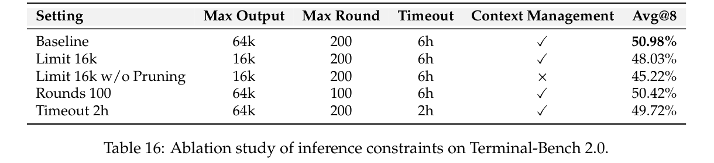
消融显示，Limit 16k 导致最大性能下降，因为模型对复杂任务的长推理，常在输出终端命令前就耗尽 token 上限。16k 限制下禁用上下文管理后，进一步降至 45.22%。同时，Rounds 100 影响很小，因为多数任务较早完成。Timeout 2h 的下降反映出某些涉及模型训练、重度编译或复杂环境配置的任务，需要更多完成时间。
E.2.3 通用 agent 基准
深度搜索。在多个基准（例如 BrowseComp [17]、BrowseComp-ZH [18]、GAIA [19]、xbench-DeepSearch [20]）评估 agent 的深度搜索能力。表 5 结果基于 avg@3，GPT-5.2 xHigh 使用 avg@1。Agent 配备以下核心工具：
- search：并行执行多个搜索查询。
- visit：基于 LLM 分析网页内容，回答特定问题。
- google_scholar：搜索学术文章与技术文献。
- python_interpreter：运行 Python 代码进行计算、数据分析。
- file：从直接 URL 下载并保存文件。
推理时采用 256k token 上下文窗口，不限制最大生成长度。top-p=0.95、temperature=1.0、presence penalty=1.1，执行预算最多 400 步。
11 https://huggingface.co/datasets/zai-org/terminal-bench-2-verified
Agent 和 LLM 裁判的详细系统提示词，与 [98] 对应 GitHub 仓库提供的配置一致。
BrowseComp（使用上下文管理）。表 5 报告的 69.0，对应在完整 BrowseComp 数据集上评估的 discard-all 方法。该方法与 DeepSeek V3.2 [1] 相同，当上下文长度超过预设阈值，agent 丢弃全部上下文并重新初始化操作循环。在最多 1000 步迭代约束下，BrowseComp 使用 72k token 阈值，BrowseComp-ZH 使用 41k token 阈值。
我们还在 BrowseComp 的 200 个样本子集上评估不同上下文管理策略，包括 Summary、Keep-first&last\(K\)、Discard-all 和多 agent 编排。如表 17 所示，模型能稳健适应这些不同范式。单 agent 策略中，Discard-all 取得有竞争力的 66.0% 准确率。我们认为，Discard-all 相当于测试时 pass@k 策略，迫使模型从头重新推理，直至找到自我验证的路径。性能呈现清晰层级：Multi-agent 通过主 agent 分解任务、派遣专门 agent 并行推理，排名最高；随后为 Discard-all、Keep-first&last\(K\)、Summary，与实际步数增加高度一致。这反映推理成本（步数）与准确率的直接权衡，提示密集上下文管理可以将额外计算有效转化为更优性能。
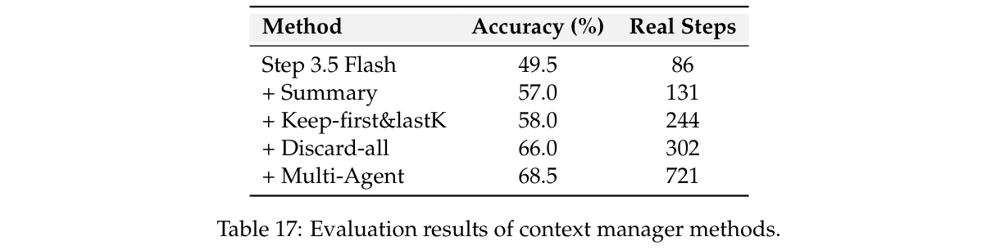
RESEARCHRUBRICS。我们使用 RESEARCHRUBRICS [21] 评估深度研究能力。数据集包含 101 个不同领域研究任务，每项配备 20–43 条专家编写的细粒度评分标准，评估事实准确性、推理可靠性和清晰度。与两类代表系统比较：商业 agent 系统和 ReAct agent。
对于商业 agent，我们通过官方网页界面，以默认配置收集报告（采集时间为 2025 年 12 月 2–15 日）。如表 18 所示，领先商业系统 Gemini DeepResearch 的汇总分数为 63.69。
ReAct agent 的详细性能比较见表 5。模型得到 65.3，超过复杂专有商业基线。值得注意的是，将 Gemini 3.0 Pro 放入标准化 ReAct 框架评估时，我们观察到 50.1 的分数。我们将这一差距归因于处理开放研究问题时搜索深度不足：模型倾向依赖内部参数知识，而非广泛外部检索，因此报告不全面，无法充分覆盖用户隐含标准。
我们将 ReAct agent 执行环境标准化，最多 30 轮推理，每轮输出最多 16k token。推理参数方面，其他基于 API 的模型采用
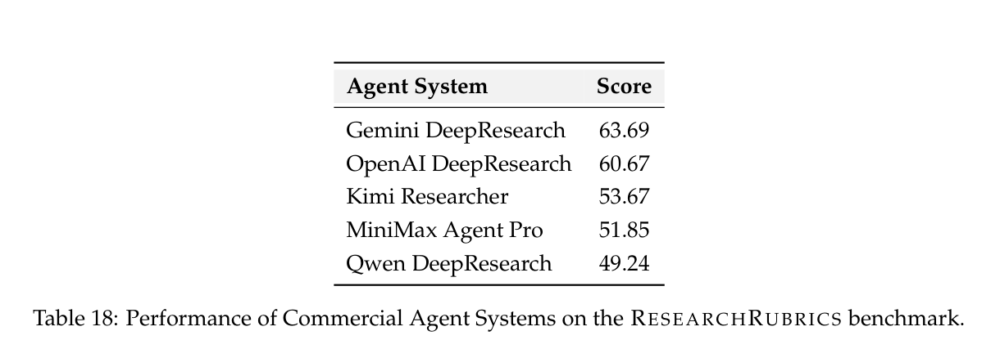
默认设置，我们的模型配置为 temperature=1、top-p=0.95（接上页）。随后，所有输出均由 LLM 裁判对每条标准作三元评分。为支持端到端研究工作流，ReAct 框架提供以下工具：
- batch_web_surfer：并发网页搜索与多页浏览。
- file：稳健文件操作，包括读、写、迭代编辑。
- file_parser：将文件转换为 Markdown。
- shell：交互命令执行与环境交互。
- todo：动态任务状态管理与跟踪。
- tmux：模拟支持持久会话和回滚历史的多路复用终端环境。
\(\tau^2\)-Bench。\(\tau^2\)-Bench [15] 在航空、零售、电信三个客服领域评估通用工具使用能力。我们使用原始代码库官方设置评估 Step 3.5 Flash。具体而言，采用默认 LLM agent 框架，temperature=1.0、top-p=0.95、最大序列长度 256K。用户模型设为 GPT-4.1，temperature=0.0，确保交互稳定。航空领域真值答案有误，因此采用 Claude Opus 4.5 提供的修正版，确保可靠性12。零售和电信领域同样遵循 Claude Opus 4.5，为用户提示词加入通用补充，避免用户错误结束交互导致的失效13。报告 8 次运行平均分，确保结果稳定。
E.2.4 通用基准
Arena-Hard-v2.0。采用 Arena-Hard-v2.0 [155] 官方评估指标，GPT-4.1 [186] 为裁判。
MultiChallenge。采用 MultiChallenge [157] 官方评估指标，o3-mini [187] 为裁判。这遵循 GPT-5 [188] 发布中的发现：GPT-4o [186] 常常错误评分复杂响应，导致结果低估。
IFBench。采用 IFBench [156] 官方评估方法。
12 https://github.com/sierra-research/tau2-bench/pulls/chrisgorgo
13 https://github.com/anthropics/model-cards/tree/main/claude-opus-4-5-20251101/tau2
E.2.5 长上下文基准
LongBench v2。采用 LongBench v2 [158] 官方评估方法。
MRCR-8needle。遵循 ContextArena14 建立的协议，对 MRCR-8needle [159] 报告曲线下面积（AUC）。具体采用 AUC@128k，以一个整体分数总结最高 131,072 token 各上下文长度的性能。
AUC 计算方式是：将每个上下文区间（8k 到 128k）的平均检索准确率，对该区间最大上下文长度作图；在线性尺度用梯形法则测量曲线下面积，再除以总上下文宽度（128k 减去初始区间大小），得到 0%–100% 百分比分数。该指标有效惩罚长上下文序列难度增加时的性能退化。
FRAMES-Oracle。采用 FRAMES [160] 官方评估指标。由于关注长上下文能力，专门报告 Oracle Prompt 子集结果：给模型提供问题，以及人工标注时使用的全部真值 Wikipedia 文章。该配置模拟向模型交付全部相关上下文的完美检索系统，作为模型性能上界。
RepoQA。采用 REPOQA [161] 官方评估方法。
E.3 内部评估——基准与方法
E.3.1 数据分析基准
为可靠评估 Step 3.5 Flash 在 Claude Code 环境完成实用数据分析任务的能力，我们开发内部数据分析基准，评估现实业务约束下端到端分析解题。通过系统提炼资深从业者的隐性专长，形成以评分细则为依据的评估套件。该方法捕捉现实分析的模糊性和上下文细节，同时借助标准化细则、可验证真值产物，确保一致评估。
基准采用专家驱动、基于评分细则的构建协议，确保领域真实性与评分可靠性。来自中国大型互联网公司的十位资深数据分析负责人，每人拥有超过 15 年经验，通过结构化访谈提供真实业务案例，提取核心分析模式和决策逻辑，形成与专家认可解题策略配对的代表任务。
访谈材料被规范为机器可消费的任务，每项包含问题描述、CSV 数据集、参考分析，以及带权重的清单式评分细则。最终基准含 50 项，覆盖多样分析意图，平均每任务 26.9 条细则。通过迭代专家审查，将任务定义、数据、参考解答与评估标准对齐，改善有效性和可复现性。
我们进一步实现统一端到端评估框架，覆盖任务执行、自动评分与报告综合。该框架在单一流程中支持基于代码、研究导向和基于文本的
分析，使其能够在异构环境中以较低集成开销实现可扩展、可复现评估（接上页）。
评估方法。每个任务均由基于模型的评估器，将生成输出与专家细则比较评分；三次相同运行的结果取平均，以减少随机方差，确保跨模型评估可靠、可比。
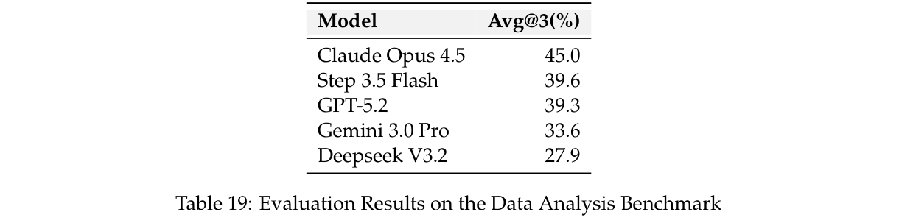
评估结果。表 19 展示数据分析基准结果。Claude Opus 4.5 总体第一，Step 3.5 Flash 以 39.58% 取得强劲第二名，与 GPT-5.2（39.31%）非常接近。这种竞争力可能部分与较好适应 Claude Code 环境有关。此外，Step 3.5 Flash 展示良好的速度与能力权衡，在维持扎实分析质量的同时更快响应。结果表明，Step 3.5 Flash 是现实数据分析任务中高效且有竞争力的选择。
E.3.2 咨询与建议基准
为严格评估 Step 3.5 Flash 在现实咨询场景中的表现，我们整理了包含 500 个多样查询的基准，来源于 Reddit、Stack Exchange 和各类社区论坛等真实社交平台，反映日常生活、学术学习、娱乐和专业工作场景中的真实用户意图。
这里使用“基于锚点”的评分框架。首先，由 GPT-5.2、Claude Opus 4.5、DeepSeek V3.2 等领先模型为每个查询生成独立响应，再由人类专家综合、精炼，形成作为真值的参考响应。参考作为高质量“锚点”，标准性能值为 88/100。
随后依据严格细则，衡量四个关键维度：实用性、逻辑、指令遵循、语气。实用性评估模型是否提供可直接使用、真正解决任务的方案，具有专家级深度、可操作步骤和可行建议。逻辑评估事实准确性和结构合理性，检查幻觉、错误引用、无效结论、因果与时间不一致，以及整体连贯性和论证流。指令遵循衡量对显式约束（例如格式、长度、明示要求）及用户问题中隐含上下文预期的遵守。语气评估沟通质量，包括语言和语域是否恰当、复杂推理解释是否清晰，以及表达是否校准，避免过度自信，并在适当时明确表示不确定性。
我们采用混合 LLM-as-Judge 系统。考虑到不同前沿模型具有不同评估优势，具体分工如下：
逻辑、指令遵循和实用性：由 GPT-5.2 评估，利用其在事实验证、约束检查和客观解题方面的领先能力。语气：由 Claude Opus 4.5 评估，利用其对语言风格、情绪校准和“类人”共鸣的细腻把握。通过与人类专家开展对齐研究验证裁判可靠性，AI 与人类评分取得较高 Pearson 相关。四个维度等权（各 25%）计算最终分数，平衡评估技术正确性与沟通质量。
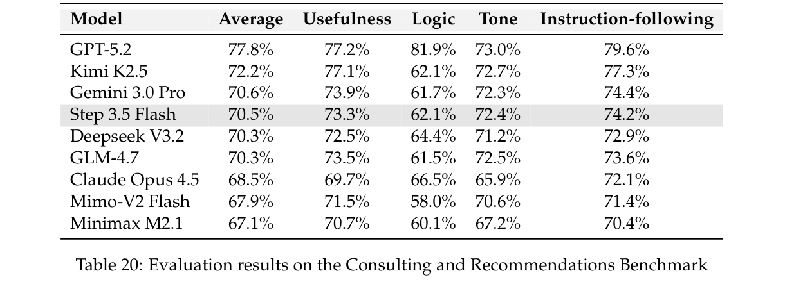
评估结果。表 20 显示，Step 3.5 Flash 在咨询与建议基准中平均得分 70.5%，整体第四。在所有维度上与 Gemini 3.0 Pro 相当，以大幅更低推理成本和延迟实现接近的 Pro 级分数（70.5% 对 70.6%）。不同于许多以推理质量下降换速度的快速模型，Step 3.5 Flash 在逻辑维度超过更大模型，减少幻觉和逻辑失败，适合事实完整性至关重要的自动咨询工作流。
E.3.3 Step 3.5 Flash＋Step-GUI
为验证现实 agent 场景中的有效性，我们在 AndroidDaily Hard [189] 上评估。这是面向中国移动应用环境的挑战性基准，包含电商交易、多媒体交互和日常移动操作等组合任务，为评估 GUI agent 在代表生产部署的复杂多步工作流中的能力，提供自然试验台。
我们实证研究两种架构实例：（1）Step-GUI [189]，轻量设备端 agent（仅边缘端），使用本地计算资源自主执行任务；（2）Step 3.5 Flash＋Step-GUI，边云协同框架，Step 3.5 Flash 作为云端推理编排器，综合高层任务计划，经 GUI-MCP 协议分解为可执行原语，并将低层控制委托给设备端 Step-GUI。该分层架构结合云端规模推理与边缘效率的互补优势：Step 3.5 Flash 的 11B 激活参数支持复杂多步规划与上下文理解，Step-GUI 则确保低延迟动作执行和保护隐私的本地控制。
定量结果
边缘—云端协同范式在 AndroidDaily Hard 上达到 57.0% 的成功率，显著优于仅边缘端基线（40.0%）。这一结果表明，将强大的云端推理与高效的边缘端执行相结合，是应对多轮 agent 交互部署约束的有效策略。
架构泛化
关键在于，这种协同模式并不限于移动生态系统，还能扩展到桌面计算机和汽车信息娱乐系统等异构平台。通过将认知编排（云端）与具身执行（边缘端）解耦，该框架确立了一种可扩展范式，用于在资源受限的工业环境中部署复杂 agent——这与 Step 3.5 Flash 重新定义生产级 agent 系统效率前沿的设计目标直接一致。结果强调，有效的真实世界 agent 不仅需要先进的推理能力，还需要能够协调各层基础设施之间计算分配的架构。
参考文献
[1] DeepSeek-AI. DeepSeek-V3.2-Exp：通过 DeepSeek Sparse Attention 提升长上下文效率, 2025.
[2] Aohan Zeng, Xin Lv, Qinkai Zheng, Zhenyu Hou, Bin Chen, Chengxing Xie, Cunxiang Wang, Da Yin, Hao Zeng, Jiajie Zhang, 等。 GLM-4.5：agent、推理与编程（ARC）基础模型. arXiv 预印本 arXiv:2508.06471, 2025.
[3] LLM-Core Xiaomi. MiMo-V2-Flash 技术报告, 2026.
[4] Meituan LongCat Team, Bei Li, Bingye Lei, Bo Wang, Bolin Rong, Chao Wang, Chao Zhang, Chen Gao, Chen Zhang, Cheng Sun, 等。 LongCat-Flash 技术报告. arXiv 预印本 arXiv:2509.01322, 2025.
[5] Kimi Team, Yifan Bai, Yiping Bao, Guanduo Chen, Jiahao Chen, Ningxin Chen, Ruijue Chen, Yanru Chen, Yuankun Chen, Yutian Chen, 等。 Kimi K2：开放的 agent 智能. arXiv 预印本 arXiv:2507.20534, 2025.
[6] MiniMax Team. MiniMax-M2.1, 2025.
[7] OpenAI. GPT-5.2, 2025.
[8] Google DeepMind. Gemini 3 Pro 模型卡, 2025.
[9] Anthropic. 系统卡：Claude Opus 4.5, 2025.
[10] Angelos Katharopoulos, Apoorv Vyas, Nikolaos Pappas, and François Fleuret. transformer 就是 RNN：采用线性 attention 的快速自回归 transformer. 载于 the 37th International Conference on Machine Learning, ICML’20. JMLR.org, 2020.
[11] HMMT. HMMT 2025 年 2 月赛, 2025.
[12] Naman Jain, King Han, Alex Gu, Wen-Ding Li, Fanjia Yan, Tianjun Zhang, Sida Wang, Armando Solar-Lezama, Koushik Sen, and Ion Stoica. LiveCodeBench：对代码大语言模型进行全面且无污染的评测. arXiv 预印本 arXiv:2403.07974, 2024.
[13] OpenAI. 介绍 SWE-bench Verified：我们发布了 SWE-bench 中经人工验证、更加……的子集, 2024.
[14] John Yang, Kilian Lieret, Carlos E. Jimenez, Alexander Wettig, Kabir Khandpur, Yanzhe Zhang, Binyuan Hui, Ofir Press, Ludwig Schmidt, and Diyi Yang. SWE-smith：扩展软件工程 agent 的数据规模, 2025.
[15] Sierra Research. tau2-bench. https://github.com/sierra-research/tau2-bench, 2025.
[16] Mike A Merrill, Alexander G Shaw, Nicholas Carlini, Boxuan Li, Harsh Raj, Ivan Bercovich, Lin Shi, Jeong Yeon Shin, Thomas Walshe, E Kelly Buchanan, 等。 Terminal-Bench：在命令行界面的困难真实任务上评测 agent. arXiv 预印本 arXiv:2601.11868, 2026.
[17] Jason Wei, Zhiqing Sun, Spencer Papay, Scott McKinney, Jeffrey Han, Isa Fulford, Hyung Won Chung, Alex Tachard Passos, William Fedus, and Amelia Glaese. BrowseComp：面向浏览 agent 的简单而富有挑战性的基准, 2025.
[18] Peilin Zhou, Bruce Leon, Xiang Ying, Can Zhang, Yifan Shao, Qichen Ye, Dading Chong, Zhiling Jin, Chenxuan Xie, Meng Cao, Yuxin Gu, Sixin Hong, Jing Ren, Jian Chen, Chao Liu, and Yining Hua. BrowseComp-ZH：评测大语言模型的中文网页浏览能力, 2025.
[19] Grégoire Mialon, Clémentine Fourrier, Craig Swift, Thomas Wolf, Yann LeCun, and Thomas Scialom. GAIA：通用 AI 助手基准, 2023.
[20] Kaiyuan Chen, Yixin Ren, Yang Liu, Xiaobo Hu, Haotong Tian, Tianbao Xie, Fangfu Liu, Haoye Zhang, Hongzhang Liu, Yuan Gong, 等。 xbench：通过与职业对齐的真实世界评测追踪 agent 生产力扩展. arXiv 预印本 arXiv:2506.13651, 2025.
[21] Manasi Sharma, Chen Bo Calvin Zhang, 等。 ResearchRubrics：用于评测深度研究 agent 的提示与评分标准基准. arXiv 预印本 arXiv:2511.07685, 2025.
[22] William Fedus, Barret Zoph, and Noam Shazeer. Switch transformer：以简单高效的稀疏性扩展至万亿参数模型. arXiv 预印本 arXiv:2101.03961, 2021.
[23] Barret Zoph, Irwan Bello, Sameer Kumar, Nan Du, Yanping Huang, Jeff Dean, Noam Shazeer, and William Fedus. ST-MoE：设计稳定且可迁移的稀疏专家模型, 2022.
[24] Nan Du, Yanping Huang, Andrew M Dai, Simon Tong, Dmitry Lepikhin, Yuanzhong Xu, Maxim Krikun, Yanqi Zhou, Adams Wei Yu, Orhan Firat, Barret Zoph, Liam Fedus, Maarten P Bosma, Zongwei Zhou, Tao Wang, Emma Wang, Kellie Webster, Marie Pellat, Kevin Robinson, Kathleen Meier-Hellstern, Toju Duke, Lucas Dixon, Kun Zhang, Quoc Le, Yonghui Wu, Zhifeng Chen, and Claire Cui. GLaM：利用 MoE 高效扩展语言模型. In Kamalika Chaudhuri, Stefanie Jegelka, Le Song, Csaba Szepesvari, Gang Niu, and Sivan Sabato，编者， Proceedings of the 39th International Conference on Machine Learning，卷 162 of Proceedings of Machine Learning Research，页码 5547–5569. PMLR, 17–23 Jul 2022.
[25] Dmitry Lepikhin, HyoukJoong Lee, Yuanzhong Xu, Dehao Chen, Orhan Firat, Yanping Huang, Maxim Krikun, Noam Shazeer, and Zhifeng Chen. GShard：通过条件计算与自动分片扩展巨型模型, 2020.
[26] Damai Dai, Chengqi Deng, Chenggang Zhao, R. X. Xu, Huazuo Gao, Deli Chen, Jiashi Li, Wangding Zeng, Xingkai Yu, Y. Wu, Zhenda Xie, Y. K. Li, Panpan Huang, Fuli Luo, Chong Ruan, Zhifang Sui, and Wenfeng Liang. DeepSeekMoE：迈向 MoE 语言模型中的极致专家专门化, 2024.
[27] Rewon Child, Scott Gray, Alec Radford, and Ilya Sutskever. 使用稀疏 transformer 生成长序列. CoRR, abs/1904.10509, 2019.
[28] Fabian Gloeckle, Badr Youbi Idrissi, Baptiste Rozière, David Lopez-Paz, and Gabriel Synnaeve. 通过多 token 预测获得更好、更快的大语言模型. arXiv 预印本 arXiv:2404.19737, 2024.
[29] DeepSeek-AI. DeepSeek-V3 技术报告. arXiv 预印本 arXiv:2412.19437, 2024.
[30] LLM Xiaomi, Bingquan Xia, Bowen Shen, Dawei Zhu, Di Zhang, Gang Wang, Hailin Zhang, Huaqiu Liu, Jiebao Xiao, Jinhao Dong, 等。 MiMo：释放语言模型的推理潜力——从预训练到后训练. arXiv 预印本 arXiv:2505.07608, 2025.
[31] Zihan Qiu, Zekun Wang, Bo Zheng, Zeyu Huang, Kaiyue Wen, Songlin Yang, Rui Men, Le Yu, Fei Huang, Suozhi Huang, Dayiheng Liu, Jingren Zhou, and Junyang Lin. 大语言模型的 gated attention：非线性、稀疏性与无 attention sink, 2025.
[32] StepFun Team. Step3：高性价比的多模态智能.
[33] OpenAI. gpt-oss-120b 与 gpt-oss-20b 模型卡, 2025.
[34] Keller Jordan, Yuchen Jin, Vlado Boza, Jiacheng You, Franz Cesista, Laker Newhouse, and Jeremy Bernstein. Muon：神经网络隐藏层优化器, 2024.
[35] Jason Wei, Nguyen Karina, Hyung Won Chung, Yunxin Joy Jiao, Spencer Papay, Amelia Glaese, John Schulman, and William Fedus. 测量大语言模型简短回答的事实性. arXiv 预印本 arXiv:2411.04368, 2024.
[36] Chujie Zheng, Shixuan Liu, Mingze Li, Xiong-Hui Chen, Bowen Yu, Chang Gao, Kai Dang, Yuqiong Liu, Rui Men, An Yang, 等。 组序列策略优化. arXiv 预印本 arXiv:2507.18071, 2025.
[37] Feng Yao, Liyuan Liu, Dinghuai Zhang, Chengyu Dong, Jingbo Shang, and Jianfeng Gao. 高效 RL 框架暗中为你带来了 off-policy RL 训练, August 2025.
[38] Wenhan Ma, Hailin Zhang, Liang Zhao, Yifan Song, Yudong Wang, Zhifang Sui, and Fuli Luo. 通过对齐训练与推理的路由器稳定 MoE 强化学习. arXiv 预印本 arXiv:2510.11370, 2025.
[39] Nicholas Metropolis, Arianna W Rosenbluth, Marshall N Rosenbluth, Augusta H Teller, and Edward Teller. 使用高速计算机进行状态方程计算. The journal of chemical physics, 21(6):1087–1092, 1953.
[40] W Keith Hastings. 使用马尔可夫链的蒙特卡洛采样方法及其应用. 1970.
[41] Thang Luong, Dawsen Hwang, Hoang H. Nguyen, Golnaz Ghiasi, Yuri Chervonyi, Insuk Seo, Junsu Kim, Garrett Bingham, Jonathan Lee, Swaroop Mishra, Alex Zhai, Clara Huiyi Hu, Henryk Michalewski, Jimin Kim, Jeonghyun Ahn, Junhwi Bae, Xingyou Song, Trieu H. Trinh, Quoc V. Le, and Junehyuk Jung. 迈向稳健的数学推理, 2025.
[42] Jingcheng Hu, Yinmin Zhang, Shijie Shang, Xiaobo Yang, Yue Peng, Zhewei Huang, Hebin Zhou, Xin Wu, Jie Cheng, Fanqi Wan, Xiangwen Kong, Chengyuan Yao, Kaiwen Yan, Ailin Huang, Hongyu Zhou, Qi Han, Zheng Ge, Daxin Jiang, Xiangyu Zhang, and Heung-Yeung Shum. PaCoRe：学习通过并行协调推理扩展测试时计算, 2026.
[43] 构建高效的 agent. https://www.anthropic.com/engineering/building-effective-agents.
[44] 展开 Codex Agent Loop. https://openai.com/index/unrolling-the-codex-agent-loop/.
[45] Charlie Victor Snell, Jaehoon Lee, Kelvin Xu, and Aviral Kumar. 最优地扩展 LLM 测试时计算，比扩展参数更能有效提升推理能力. 载于 The Thirteenth International Conference on Learning Representations, 2025.
[46] Niklas Muennighoff, Zitong Yang, Weijia Shi, Xiang Lisa Li, Li Fei-Fei, Hannaneh Hajishirzi, Luke Zettlemoyer, Percy Liang, Emmanuel Candès, and Tatsunori B Hashimoto. s1：简单的 test-time scaling. 载于 the 2025 Conference on Empirical Methods in Natural Language Processing，页码 20286–20332, 2025.
[47] Xinyu Yang, Yuwei An, Hongyi Liu, Tianqi Chen, and Beidi Chen. Multiverse：语言模型暗中决定如何并行生成与合并结果. 载于 The Thirty-ninth Annual Conference on Neural Information Processing Systems, 2025.
[48] Iz Beltagy, Matthew E. Peters, and Arman Cohan. Longformer：面向长文档的 transformer. arXiv:2004.05150, 2020.
[49] Gemma Team, Aishwarya Kamath, Johan Ferret, 等。 Gemma 3 技术报告, 2025.
[50] Yaniv Leviathan, Matan Kalman, and Yossi Matias. 通过 speculative decoding 加速 transformer 推理. 载于 the 40th International Conference on Machine Learning, ICML’23. JMLR.org, 2023.
[51] Imanol Schlag, Kazuki Irie, and Jürgen Schmidhuber. 线性 transformer 暗中是快速权重程序生成器. 载于 International Conference on Machine Learning，页码 9355–9366. PMLR, 2021.
[52] Jikai Wang, Yi Su, Juntao Li, Qingrong Xia, Zi Ye, Xinyu Duan, Zhefeng Wang, and Min Zhang. OPT-Tree：采用自适应草稿树结构的 speculative decoding. Transactions of the Association for Computational Linguistics, 13:188–199, 2025.
[53] Yunfan Xiong, Ruoyu Zhang, Yanzeng Li, and Lei Zou. DySpec：利用动态 token 树结构加速 speculative decoding. World Wide Web, 28(3):36, 2025.
[54] Haoran You, Yichao Fu, Zheng Wang, Amir Yazdanbakhsh, and Yingyan (Celine) Lin. 当线性 attention 遇到自回归 decoding：迈向更有效、更高效的线性化大语言模型. 载于 the 41st International Conference on Machine Learning, ICML’24. JMLR.org, 2024.
[55] Joshua Ainslie, James Lee-Thorp, Michiel de Jong, Yury Zemlyanskiy, Federico Lebron, and Sumit Sanghai. GQA：从多头 checkpoint 训练广义多查询 transformer 模型. In Houda Bouamor, Juan Pino, and Kalika Bali，编者， Proceedings of the 2023 Conference on Empirical Methods in Natural Language Processing，页码 4895–4901, Singapore, December 2023. Association for Computational Linguistics.
[56] Yuhui Li, Fangyun Wei, Chao Zhang, and Hongyang Zhang. EAGLE：speculative sampling 需要重新思考特征不确定性. 载于 International Conference on Machine Learning, 2024.
[57] Gemma Team, Thomas Mesnard, Cassidy Hardin, Robert Dadashi, Surya Bhupatiraju, Shreya Pathak, Laurent Sifre, Morgane Rivière, Mihir Sanjay Kale, Juliette Love, 等。 Gemma：基于 Gemini 研究与技术的开放模型, 2024.
[58] Team Cohere, :, Aakanksha, Arash Ahmadian, Marwan Ahmed, 等。 Command A：面向企业的大语言模型, 2025.
[59] Guangxuan Xiao, Yuandong Tian, Beidi Chen, Song Han, and Mike Lewis. 利用 attention sink 实现高效流式语言模型. 载于 The Twelfth International Conference on Learning Representations, 2024.
[60] Mingjie Sun, Xinlei Chen, J Zico Kolter, and Zhuang Liu. 大语言模型中的巨大激活. 载于 First Conference on Language Modeling, 2024.
[61] Xiangming Gu, Tianyu Pang, Chao Du, Qian Liu, Fengzhuo Zhang, Cunxiao Du, Ye Wang, and Min Lin. 语言模型何时出现 attention sink：实证视角. 载于 The Thirteenth International Conference on Learning Representations, 2025.
[62] John Jumper, Richard Evans, Alexander Pritzel, Tim Green, Michael Figurnov, Olaf Ronneberger, Kathryn Tunyasuvunakool, Russ Bates, Augustin Žídek, Anna Potapenko, Alex Bridgland, Clemens Meyer, Simon A. A. Kohl, Andrew J. Ballard, Andrew Cowie, Bernardino Romera-Paredes, Stanislav Nikolov, Rishub Jain, Jonas Adler, Trevor Back, Stig Petersen, David Reiman, Ellen Clancy, Michal Zielinski, Martin Steinegger, Michalina Pacholska, Tamas Berghammer, Sebastian Bodenstein, David Silver, Oriol Vinyals, Andrew W. Senior, Koray Kavukcuoglu, Pushmeet Kohli, and Demis Hassabis. 使用 AlphaFold 进行高精度蛋白质结构预测. Nature, 596(7873):583–589, August 2021.
[63] Zhixuan Lin, Evgenii Nikishin, Xu He, and Aaron Courville. Forgetting Transformer：带遗忘门的 softmax attention. 载于 The Thirteenth International Conference on Learning Representations, 2025.
[64] Lean Wang, Huazuo Gao, Chenggang Zhao, Xu Sun, and Damai Dai. 无需辅助损失的 MoE 负载均衡策略. arXiv 预印本 arXiv:2408.15664, 2024.
[65] Yuxuan Cai, Xiaozhuan Liang, Xinghua Wang, Jin Ma, Haijin Liang, Jinwen Luo, Xinyu Zuo, Lisheng Duan, Yuyang Yin, and Xi Chen. FastMTP：通过增强多 token 预测加速 LLM 推理, 2025.
[66] Jason Ansel, Edward Yang, Horace He, Natalia Gimelshein, Animesh Jain, Michael Voznesensky, Bin Bao, Peter Bell, David Berard, Evgeni Burovski, Geeta Chauhan, Anjali Chourdia, Will Constable, Alban Desmaison, Zachary DeVito, Elias Ellison, Will Feng, Jiong Gong, Michael Gschwind, Brian Hirsh, Sherlock Huang, Kshiteej Kalambarkar, Laurent Kirsch, Michael Lazos, Mario Lezcano, Yanbo Liang, Jason Liang, Yinghai Lu, CK Luk, Bert Maher, Yunjie Pan, Christian Puhrsch, Matthias Reso, Mark Saroufim, Marcos Yukio Siraichi, Helen Suk, Michael Suo, Phil Tillet, Eikan Wang, Xiaodong Wang, William Wen, Shunting Zhang, Xu Zhao, Keren Zhou, Richard Zou, Ajit Mathews, Gregory Chanan, Peng Wu, and Soumith Chintala. PyTorch 2：通过动态 Python 字节码转换与图编译加速机器学习. 载于第 29 届 ACM International Conference on Architectural Support for Programming Languages and Operating Systems, Volume 2 (ASPLOS ’24). ACM, April 2024.
[67] Mohammad Shoeybi, Mostofa Patwary, Raul Puri, Patrick LeGresley, Jared Casper, and Bryan Catanzaro. Megatron-LM：利用模型并行训练数十亿参数语言模型. arXiv 预印本 arXiv:1909.08053, 2019.
[68] Deepak Narayanan, Mohammad Shoeybi, Jared Casper, Patrick LeGresley, Mostofa Patwary, Vijay Anand Korthikanti, Dmitri Vainbrand, Prethvi Kashinkunti, Julie Bernauer, Bryan Catanzaro, Amar Phanishayee, and Matei Zaharia. 使用 Megatron-LM 在 GPU 集群上高效训练大规模语言模型, 2021.
[69] Samyam Rajbhandari, Jeff Rasley, Olatunji Ruwase, and Yuxiong He. ZeRO：面向万亿参数模型训练的内存优化. 载于 SC20: International Conference for High Performance Computing, Networking, Storage and Analysis，页码 1–16, 2020.
[70] Dennis Liu, Zijie Yan, Xin Yao, Tong Liu, Vijay Korthikanti, Evan Wu, Shiqing Fan, Gao Deng, Hongxiao Bai, Jianbin Chang, Ashwath Aithal, Michael Andersch, Mohammad Shoeybi, Jiajie Yao, Chandler Zhou, David Wu, Xipeng Li, and June Yang. MoE Parallel Folding：利用异构并行映射，在 Megatron Core 中高效训练大规模 MoE 模型, 2025.
[71] Wentao Guo, Mayank Mishra, Xinle Cheng, Ion Stoica, and Tri Dao. SonicMoE：通过 I/O 与 tile 感知优化加速 MoE, 2025.
[72] Jeremy Bernstein and Laker Newhouse. 旧优化器，新范数：文选, 2024.
[73] Noah Amsel, David Persson, Christopher Musco, and Robert M. Gower. The Polar Express：最优矩阵符号方法及其在 Muon 算法中的应用, 2025.
[74] Zihan Qiu, Zeyu Huang, Bo Zheng, Kaiyue Wen, Zekun Wang, Rui Men, Ivan Titov, Dayiheng Liu, Jingren Zhou, and Junyang Lin. 细节中的魔鬼：训练专门化 MoE 模型时负载均衡损失的实现. arXiv 预印本 arXiv:2501.11873, 2025.
[75] An Yang, Anfeng Li, Baosong Yang, Beichen Zhang, Binyuan Hui, Bo Zheng, Bowen Yu, Chang Gao, Chengen Huang, Chenxu Lv, Chujie Zheng, Dayiheng Liu, Fan Zhou, Fei Huang, Feng Hu, Hao Ge, Haoran Wei, Huan Lin, Jialong Tang, Jian Yang, Jianhong Tu, Jianwei Zhang, Jianxin Yang, Jiaxi Yang, Jing Zhou, Jingren Zhou, Junyang Lin, Kai Dang, Keqin Bao, Kexin Yang, Le Yu, Lianghao Deng, Mei Li, Mingfeng Xue, Mingze Li, Pei Zhang, Peng Wang, Qin Zhu, Rui Men, Ruize Gao, Shixuan Liu, Shuang Luo, Tianhao Li, Tianyi Tang, Wenbiao Yin, Xingzhang Ren,
[75]（续） Xinyu Wang, Xinyu Zhang, Xuancheng Ren, Yang Fan, Yang Su, Yichang Zhang, Yinger Zhang, Yu Wan, Yuqiong Liu, Zekun Wang, Zeyu Cui, Zhenru Zhang, Zhipeng Zhou, and Zihan Qiu. Qwen3 技术报告. arXiv 预印本 arXiv:2505.09388, 2025.
[76] Alec Radford, Jeff Wu, Rewon Child, David Luan, Dario Amodei, and Ilya Sutskever. 语言模型是无监督多任务学习者. 2019.
[77] Ruibin Xiong, Yunchang Yang, Di He, Kai Zheng, Shuxin Zheng, Chen Xing, Huishuai Zhang, Yanyan Lan, Liwei Wang, and Tieyan Liu. 论 transformer 架构中的层归一化. 载于 International Conference on Machine Learning，页码 10524–10533. PMLR, 2020.
[78] Noam Shazeer. GLU 变体改进 transformer, 2020.
[79] Common Crawl. Common Crawl. https://commoncrawl.org.
[80] Siming Huang, Tianhao Cheng, J. K. Liu, Jiaran Hao, Liuyihan Song, Yang Xu, J. Yang, Jiaheng Liu, Chenchen Zhang, Linzheng Chai, Ruifeng Yuan, Zhaoxiang Zhang, Jie Fu, Qian Liu, Ge Zhang, Zili Wang, Yuan Qi, Yinghui Xu, and Wei Chu. OpenCoder：顶级代码大语言模型的开放指南, 2025.
[81] Carlos E Jimenez, John Yang, Alexander Wettig, Shunyu Yao, Kexin Pei, Ofir Press, and Karthik R Narasimhan. SWE-bench：语言模型能否解决真实世界的 GitHub issue？ 载于 The Twelfth International Conference on Learning Representations, 2024.
[82] Chunqiu Steven Xia, Yinlin Deng, Soren Dunn, and Lingming Zhang. Agentless：揭开基于 LLM 的软件工程 agent 的神秘面纱. arXiv 预印本 arXiv:2407.01489, 2024.
[83] Jianlin Su, Murtadha Ahmed, Yu Lu, Shengfeng Pan, Wen Bo, and Yunfeng Liu. RoFormer：利用旋转位置 embedding 增强的 transformer, 2024.
[84] Wenhan Xiong, Jingyu Liu, Igor Molybog, Hejia Zhang, Prajjwal Bhargava, Rui Hou, Louis Martin, Rashi Rungta, Karthik Abinav Sankararaman, Barlas Oguz, 等。 基础模型的有效长上下文扩展, 2024.
[85] Aixin Liu, Aoxue Mei, Bangcai Lin, Bing Xue, Bingxuan Wang, Bingzheng Xu, Bochao Wu, Bowei Zhang, Chaofan Lin, Chen Dong, 等。 DeepSeek-V3.2：推动开放大语言模型的前沿. arXiv 预印本 arXiv:2512.02556, 2025.
[86] Yixin Ye, Zhen Huang, Yang Xiao, Ethan Chern, Shijie Xia, and Pengfei Liu. LIMO：推理中少即是多, 2025.
[87] Fabio Pardo, Arash Tavakoli, Vitaly Levdik, and Petar Kormushev. 强化学习中的时间限制, 2022.
[88] Michael Luo, Sijun Tan, Justin Wong, Xiaoxiang Shi, William Y. Tang, Manan Roongta, Colin Cai, Jeffrey Luo, Li Erran Li, Raluca Ada Popa, and Ion Stoica. DeepScaleR：通过扩展 RL，使 1.5B 模型超越 o1-preview. https://pretty-radio-b75.notion.site/DeepScaleR-Surpassing-O1-Preview-with-a-1-5B-Model-by-Scaling-RL-19681902c1468005bed8ca303013a4e2, 2025. Notion 博客。
[89] Qiying Yu, Zheng Zhang, Ruofei Zhu, Yufeng Yuan, Xiaochen Zuo, Yu Yue, Weinan Dai, Tiantian Fan, Gaohong Liu, Lingjun Liu, 等。 DAPO：大规模开源 LLM 强化学习系统. arXiv 预印本 arXiv:2503.14476, 2025.
[90] Jingcheng Hu, Yinmin Zhang, Qi Han, Daxin Jiang, Xiangyu Zhang, and Heung-Yeung Shum. Open-Reasoner-Zero：扩展基础模型强化学习的开源方案. arXiv 预印本 arXiv:2503.24290, 2025.
[91] Minh-Thang Luong, Dawsen Hwang, Hoang H Nguyen, Golnaz Ghiasi, Yuri Chervonyi, Insuk Seo, Junsu Kim, Garrett Bingham, Jonathan Lee, Swaroop Mishra, 等。 迈向稳健的数学推理. 载于 the 2025 Conference on Empirical Methods in Natural Language Processing，页码 35406–35430, 2025.
[92] François Chollet. 论智能的度量. arXiv 预印本 arXiv:1911.01547, 2019.
[93] Long Phan, Alice Gatti, Ziwen Han, Nathaniel Li, Josephina Hu, Hugh Zhang, Chen Bo Calvin Zhang, Mohamed Shaaban, John Ling, Sean Shi, 等。 Humanity’s Last Exam, 2025.
[94] Zhihong Shao, Peiyi Wang, Qihao Zhu, Runxin Xu, Junxiao Song, Xiao Bi, Haowei Zhang, Mingchuan Zhang, Y. K. Li, Y. Wu, and Daya Guo. DeepSeekMath：推动开放语言模型数学推理的极限, 2024.
[95] Long Ouyang, Jeff Wu, Xu Jiang, Diogo Almeida, Carroll L. Wainwright, Pamela Mishkin, Chong Zhang, Sandhini Agarwal, Katarina Slama, Alex Ray, John Schulman, Jacob Hilton, Fraser Kelton, Luke Miller, Maddie Simens, Amanda Askell, Peter Welinder, Paul Christiano, Jan Leike, and Ryan Lowe. 利用人类反馈训练语言模型遵循指令, 2022.
[96] Lunjun Zhang, Arian Hosseini, Hritik Bansal, Mehran Kazemi, Aviral Kumar, and Rishabh Agarwal. 生成式验证器：将奖励建模视为下一 token 预测, 2025.
[97] Ralph Allan Bradley and Milton E Terry. 不完全区组设计的排序分析：I. 成对比较法. Biometrika, 39(3/4):324–345, 1952.
[98] Chen Hu, Haikuo Du, Heng Wang, Lin Lin, Mingrui Chen, Peng Liu, Ruihang Miao, Tianchi Yue, Wang You, Wei Ji, Wei Yuan, Wenjin Deng, Xiaojian Yuan, Xiaoyun Zhang, Xiangyu Liu, Xikai Liu, Yanming Xu, Yicheng Cao, Yifei Zhang, Yongyao Wang, Yubo Shu, Yurong Zhang, Yuxiang Zhang, Zheng Gong, Zhichao Chang, Binyan Li, Dan Ma, Furong Jia, Hongyuan Wang, Jiayu Liu, Jing Bai, Junlan Liu, Manjiao Liu, Na Wang, Qiuping Wu, Qinxin Du, Shiwei Li, Wen Sun, Yifeng Gong, Yonglin Chen, Yuling Zhao, Yuxuan Lin, Ziqi Ren, Zixuan Wang, Aihu Zhang, Brian Li, Buyun Ma, Kang An, Li Xie, Mingliang Li, Pan Li, Shidong Yang, Xi Chen, Xiaojia Liu, Yuchu Luo, Yuan Song, YuanHao Ding, Yuanwei Liang, Zexi Li, Zhaoning Zhang, Zixin Zhang, Binxing Jiao, Daxin Jiang, Jiansheng Chen, Jing Li, Xiangyu Zhang, and Yibo Zhu. Step-DeepResearch 技术报告, 2025.
[99] Jia Li, Edward Beeching, Lewis Tunstall, Ben Lipkin, Roman Soletskyi, Shengyi Huang, Kashif Rasul, Longhui Yu, Albert Q Jiang, Ziju Shen, 等。 NuminaMath：AI4Maths 中最大的公开数据集，包含 860k 组竞赛数学题与解答. 2024.
[100] Alon Albalak 等。 Big-Math：面向语言模型强化学习的大规模高质量数学数据集. arXiv 预印本 arXiv:2502.17387, 2025.
[101] Arindam Mitra, Hamed Khanpour, Corby Rosset, and Ahmed Awadallah. Orca-Math：释放小语言模型在小学数学中的潜力. arXiv 预印本 arXiv:2402.14830, 2024.
[102] aslawliet. Olympiads. https://huggingface.co/datasets/aslawliet/olympiads, 2024. Hugging Face 数据集。
[103] aslawliet. Cn-k12. https://huggingface.co/datasets/aslawliet/cn-k12, 2024. 包含中国 K–12 数学题的 Hugging Face 数据集。
[104] Open-R1 Team. OpenR1-Math-220k. https://huggingface.co/datasets/open-r1/OpenR1-Math-220k, 2025. 开源蒸馏数学推理数据集。
[105] X. He 等。 DeepMath-103K：大规模、富有挑战性的数学问答基准. arXiv 预印本 arXiv:2504.11456, 2025.
[106] Qiying Yu, Zheng Zhang, Ruofei Zhu, Yufeng Yuan, Xiaochen Zuo, Yu Yue, Tiantian Fan, Gaohong Liu, Lingjun Liu, Xin Liu, Haibin Lin, Zhiqi Lin, Bole Ma, Guangming Sheng, Yuxuan Tong, Chi Zhang, Mofan Zhang, Wang Zhang, Hang Zhu, Jinhua Zhu, Jiaze Chen, Jiangjie Chen, Chengyi Wang, Hongli Yu, Weinan Dai, Yuxuan Song, Xiangpeng Wei, Hao Zhou, Jingjing Liu, Wei-Ying Ma, Ya-Qin Zhang, Lin Yan, Mu Qiao, Yonghui Wu, and Mingxuan Wang. DAPO：大规模开源 LLM 强化学习系统, 2025.
[107] Etash Guha 等。 OpenThoughts：推理模型的数据配方. arXiv 预印本 arXiv:2506.04178, 2025.
[108] Niklas Muennighoff 等。 s1：简单的 test-time scaling. https://arxiv.org/abs/2501.19393, 2025.
[109] Yunjie Ji, Xiaoyu Tian, Sitong Zhao, Haotian Wang, Shuaiting Chen, Yiping Peng, Han Zhao, and Xiangang Li. AM-Thinking-v1：以 32B 规模推进推理前沿, 2025.
[110] LIMO Authors. 推理中少即是多：半参数数学推理模型. arXiv 预印本 arXiv:2502.03387, 2025.
[111] Rongao Li, Jie Fu, Bo-Wen Zhang, Tao Huang, Zhihong Sun, Chen Lyu, Guang Liu, Zhi Jin, and Ge Li. TACO：算法代码生成主题数据集, 2023.
[112] Michael Luo, Sijun Tan, Roy Huang, Ameen Patel, Alpay Ariyak, Qingyang Wu, Xiaoxiang Shi, Rachel Xin, Colin Cai, Maurice Weber, Ce Zhang, Li Erran Li, Raluca Ada Popa, and Ion Stoica. DeepCoder：达到 o3-mini 水平的完全开源 14B 编程模型. https://www.together.ai/blog/deepcoder, 2025. 技术博客。
[113] Zihan Wang, Siyao Liu, Yang Sun, Hongyan Li, and Kai Shen. CodeContests+：为竞赛编程生成高质量测试用例, 2025.
[114] Guohao Li, Hasan Abed Al Kader Hammoud, Hani Itani, Dmitrii Khizbullin, and Bernard Ghanem. CAMEL：通过可通信 agent 探索大规模语言模型社会的“心智”, 2023.
[115] Akhiad Bercovich, Itay Levy, Izik Golan, Mohammad Dabbah, Ran El-Yaniv, Omri Puny, Ido Galil, Zach Moshe, Tomer Ronen, Najeeb Nabwani, 等。 Llama-Nemotron：高效推理模型, 2025.
[116] Run-Ze Fan, Zengzhi Wang, and Pengfei Liu. MegaScience：推动科学推理后训练数据集的前沿. arXiv 预印本 arXiv:2507.16812, 2025.
[117] Wenting Zhao, Xiang Ren, Jack Hessel, Claire Cardie, Yejin Choi, and Yuntian Deng. WildChat：真实环境中的 1M 条 ChatGPT 交互日志. arXiv 预印本 arXiv:2405.01470, 2024.
[118] Junteng Liu, Yunji Li, Chi Zhang, Jingyang Li, Aili Chen, Ke Ji, Weiyu Cheng, Zijia Wu, Chengyu Du, Qidi Xu, 等。 WebExplorer：通过探索与演化训练长程网页 agent. arXiv 预印本 arXiv:2509.06501, 2025.
[119] Kuan Li, Zhongwang Zhang, Huifeng Yin, Liwen Zhang, Litu Ou, Jialong Wu, Wenbiao Yin, Baixuan Li, Zhengwei Tao, Xinyu Wang, 等。 WebSailor：引导网页 agent 的超人类推理. arXiv 预印本 arXiv:2507.02592, 2025.
[120] Yuetai Li, Huseyin A Inan, Xiang Yue, Wei-Ning Chen, Lukas Wutschitz, Janardhan Kulkarni, Radha Poovendran, Robert Sim, and Saravan Rajmohan. 利用推理模型模拟环境以训练 agent. arXiv 预印本 arXiv:2511.01824, 2025.
[121] Lianghong Guo, Yanlin Wang, Caihua Li, Wei Tao, Pengyu Yang, Jiachi Chen, Haoyu Song, Duyu Tang, and Zibin Zheng. SWE-Factory：面向 issue 解决训练数据和评测基准的自动化工厂, 2026.
[122] Jiaran Zhang, Luck Ma, Yanhao Li, Fanqi Wan, Di Qi, Xu Zhao, Jieyi Hou, Zhe Xie, Mengqiang Ren, Xin Wu, Zhewei Huang, Liangyu Chen, Yingwei Ma, Qi Han, and Xiangyu Zhang. DockSmith：通过 agent 式 Docker 构建器扩展可靠的编程环境, 2026.
[123] John Yang, Kilian Lieret, Carlos E Jimenez, Alexander Wettig, Kabir Khandpur, Yanzhe Zhang, Binyuan Hui, Ofir Press, Ludwig Schmidt, and Diyi Yang. SWE-smith：扩展软件工程 agent 的数据规模. arXiv 预印本 arXiv:2504.21798, 2025.
[124] Jiayi Pan, Xingyao Wang, Graham Neubig, Navdeep Jaitly, Heng Ji, Alane Suhr, and Yizhe Zhang. 利用 SWE-Gym 训练软件工程 agent 与验证器. arXiv 预印本 arXiv:2412.21139, 2024.
[125] Naman Jain, Jaskirat Singh, Manish Shetty, Liang Zheng, Koushik Sen, and Ion Stoica. R2E-Gym：用于扩展开放权重 SWE agent 的程序化环境与混合验证器. arXiv 预印本 arXiv:2504.07164, 2025.
[126] Ibragim Badertdinov, Alexander Golubev, Maksim Nekrashevich, Anton Shevtsov, Simon Karasik, Andrei Andriushchenko, Maria Trofimova, Daria Litvintseva, and Boris Yangel. SWE-rebench：用于软件工程 agent 任务收集与去污染评测的自动化流水线. arXiv 预印本 arXiv:2505.20411, 2025.
[127] Qijia Shen, Jay Rainton, Aznaur Aliev, Ahmed Awelkair, Boyuan Ma, Zhiqi Huang, Yuzhen Mao, Wendong Fan, Philip Torr, Bernard Ghanem, Changran Hu, Urmish Thakker, and Guohao Li. SETA：扩展终端 agent 的环境规模, January 2026.
[128] Xiaozhi Wang, Tianyu Gao, Zhaocheng Zhu, Zhengyan Zhang, Zhiyuan Liu, Juanzi Li, and Jian Tang. KEPLER：知识 embedding 与预训练语言表示的统一模型. Transactions of the Association for Computational Linguistics, 9:176–194, 2021.
[129] Daya Guo, Dejian Yang, Haowei Zhang, Junxiao Song, Ruoyu Zhang, Runxin Xu, Qihao Zhu, Shirong Ma, Peiyi Wang, Xiao Bi, 等。 DeepSeek-R1 通过强化学习激励 LLM 推理. Nature, 645(8081):633–638, September 2025.
[130] An Yang, Anfeng Li, Baosong Yang, Beichen Zhang, Binyuan Hui, Bo Zheng, Bowen Yu, Chang Gao, Chengen Huang, Chenxu Lv, Chujie Zheng, Dayiheng Liu, Fan Zhou, Fei Huang, Feng Hu, Hao Ge, Haoran Wei, Huan Lin, Jialong Tang, Jian Yang, Jianhong Tu, Jianwei Zhang, Jianxin Yang, Jiaxi Yang, Jing Zhou, Jingren Zhou, Junyang Lin, Kai Dang, Keqin Bao, Kexin Yang, Le Yu, Lianghao Deng, Mei Li, Mingfeng Xue, Mingze Li, Pei Zhang, Peng Wang, Qin Zhu, Rui Men, Ruize Gao, Shixuan Liu, Shuang Luo, Tianhao Li, Tianyi Tang, Wenbiao Yin, Xingzhang Ren, Xinyu Wang, Xinyu Zhang, Xuancheng Ren, Yang Fan, Yang Su, Yichang Zhang, Yinger Zhang, Yu Wan, Yuqiong Liu, Zekun Wang, Zeyu Cui, Zhenru Zhang, Zhipeng Zhou, and Zihan Qiu. Qwen3 技术报告, 2025.
[131] Xingyao Wang, Boxuan Li, Yufan Song, Frank F Xu, Xiangru Tang, Mingchen Zhuge, Jiayi Pan, Yueqi Song, Bowen Li, Jaskirat Singh, 等。 OpenHands：面向作为通用 agent 的 AI 软件开发者的开放平台. arXiv 预印本 arXiv:2407.16741, 2024.
[132] John Yang, Carlos E Jimenez, Alexander Wettig, Kilian Lieret, Shunyu Yao, Karthik Narasimhan, and Ofir Press. SWE-agent：agent 与计算机接口使自动化软件工程成为可能. Advances in Neural Information Processing Systems, 37:50528–50652, 2024.
[133] Inc. Kilo Code. 以 Kilo 的速度前进. https://kilo.ai/, 2026. Kilo Code 网页。
[134] Roo Code. 您的 AI 软件工程团队已就绪. https://roocode.com/, 2026. Roo Code 网页。
[135] ANTHROPIC PBC. 自动补全完成代码行，Claude Code 完成功能. https://claude.com/product/claude-code, 2026. Claude Code 网页。
[136] Mirac Suzgun, Nathan Scales, Nathanael Schärli, Sebastian Gehrmann, Yi Tay, Hyung Won Chung, Aakanksha Chowdhery, Quoc V. Le, Ed H. Chi, Denny Zhou, and Jason Wei. 具有挑战性的 BIG-Bench 任务，以及 chain-of-thought 能否解决这些任务, 2022.
[137] Dan Hendrycks, Collin Burns, Steven Basart, Andy Zou, Mantas Mazeika, Dawn Song, and Jacob Steinhardt. 测量大规模多任务语言理解, 2020.
[138] Aryo Pradipta Gema, Joshua Ong Jun Leang, Giwon Hong, Alessio Devoto, Alberto Carlo Maria Mancino, Rohit Saxena, Xuanli He, Yu Zhao, Xiaotang Du, Mohammad Reza Ghasemi Madani, Claire Barale, Robert McHardy, Joshua Harris, Jean Kaddour, Emile van Krieken, and Pasquale Minervini. 我们已经完成 MMLU 了吗？, 2024.
[139] Yubo Wang, Xueguang Ma, Ge Zhang, Yuansheng Ni, Abhranil Chandra, Shiguang Guo, Weiming Ren, Aaran Arulraj, Xuan He, Ziyan Jiang, Tianle Li, Max Ku, Kai Wang, Alex Zhuang, Rongqi Fan, Xiang Yue, and Wenhu Chen. MMLU-Pro：更稳健、更具挑战性的多任务语言理解基准, 2024.
[140] Rowan Zellers, Ari Holtzman, Yonatan Bisk, Ali Farhadi, and Yejin Choi. HellaSwag：机器真的能续完你的句子吗？, 2019.
[141] Keisuke Sakaguchi, Ronan Le Bras, Chandra Bhagavatula, and Yejin Choi. WinoGrande：大规模对抗式 Winograd Schema 挑战, 2019.
[142] David Rein, Betty Li Hou, Asa Cooper Stickland, Jackson Petty, Richard Yuanzhe Pang, Julien Dirani, Julian Michael, and Samuel R. Bowman. GPQA：研究生级、无法依靠 Google 搜索解答的问答基准, 2023.
[143] Xinrun Du, Yifan Yao, Kaijing Ma, Bingli Wang, Tianyu Zheng, King Zhu, Minghao Liu, Yiming Liang, Xiaolong Jin, Zhenlin Wei, 等。 SuperGPQA：将 LLM 评测扩展至 285 个研究生学科, 2025.
[144] OpenAI. SimpleQA. https://github.com/openai/simple-evals, 2024.
[145] Karl Cobbe, Vineet Kosaraju, Mohammad Bavarian, Mark Chen, Heewoo Jun, Lukasz Kaiser, Matthias Plappert, Jerry Tworek, Jacob Hilton, Reiichiro Nakano, Christopher Hesse, and John Schulman. 训练验证器以解决数学文字题, 2021.
[146] Dan Hendrycks, Collin Burns, Saurav Kadavath, Akul Arora, Steven Basart, Eric Tang, Dawn Song, and Jacob Steinhardt. 利用 MATH 数据集测量数学问题求解能力, 2021.
[147] Mark Chen, Jerry Tworek, Heewoo Jun, Qiming Yuan, Henrique Ponde de Oliveira Pinto, Jared Kaplan, Harri Edwards, Yuri Burda, Nicholas Joseph, Greg Brockman, Alex Ray, Raul Puri, Gretchen Krueger, Michael Petrov, Heidy Khlaaf, Girish Sastry, Pamela Mishkin, Brooke Chan, Scott Gray, Nick Ryder, Mikhail Pavlov, Alethea Power, Lukasz Kaiser, Mohammad Bavarian, Clemens Winter, Philippe Tillet, Felipe Petroski Such, Dave Cummings, Matthias Plappert, Fotios Chantzis, Elizabeth Barnes, Ariel Herbert-Voss, William Hebgen Guss, Alex Nichol, Alex Paino, Nikolas Tezak, Jie Tang, Igor Babuschkin, Suchir Balaji, Shantanu Jain, William Saunders, Christopher Hesse, Andrew N. Carr, Jan Leike, Josh Achiam, Vedant Misra, Evan Morikawa, Alec Radford, Matthew Knight, Miles Brundage, Mira Murati, Katie Mayer, Peter Welinder, Bob McGrew, Dario Amodei, Sam McCandlish, Ilya Sutskever, and Wojciech Zaremba. 评测在代码上训练的大语言模型, 2021.
[148] Jacob Austin, Augustus Odena, Maxwell Nye, Maarten Bosma, Henryk Michalewski, David Dohan, Ellen Jiang, Carrie Cai, Michael Terry, Quoc Le, and Charles Sutton. 使用大语言模型进行程序合成, 2021.
[149] Jiawei Liu, Chunqiu Steven Xia, Yuyao Wang, and Lingming Zhang. ChatGPT 生成的代码真的正确吗？对大语言模型代码生成的严格评测, 2023.
[150] Federico Cassano, John Gouwar, Daniel Nguyen, Sydney Nguyen, Luna Phipps-Costin, Donald Pinckney, Ming-Ho Yee, Yangtian Zi, Carolyn Jane Anderson, Molly Q Feldman, Arjun Guha, Michael Greenberg, and Abhinav Jangda. MultiPL-E：神经代码生成基准测试的可扩展方法, 2022.
[151] Yuzhen Huang, Yuzhuo Bai, Zhihao Zhu, Junlei Zhang, Jinghan Zhang, Tangjun Su, Junteng Liu, Chuancheng Lv, Yikai Zhang, Jiayi Lei, Yao Fu, Maosong Sun, and Junxian He. C-Eval：面向基础模型的多层次、多学科中文评测套件, 2023.
[152] Haonan Li, Yixuan Zhang, Fajri Koto, Yifei Yang, Hai Zhao, Yeyun Gong, Nan Duan, and Timothy Baldwin. CMMLU：测量中文大规模多任务语言理解, 2023.
[153] Yancheng He, Shilong Li, Jiaheng Liu, Yingshui Tan, Weixun Wang, Hui Huang, Xingyuan Bu, Hangyu Guo, Chengwei Hu, Boren Zheng, 等。 Chinese SimpleQA：大语言模型的中文事实性评测, 2024.
[154] Long Phan, Tony CY Pang, Adam Wecker, Yifan Xiong, Dan Hendrycks, 等。 Humanity’s Last Exam, 2025.
[155] Tianle Li, Wei-Lin Chiang, Evan Frick, Lisa Dunlap, Banghua Zhu, Joseph E. Gonzalez, and Ion Stoica. 从实时数据到高质量基准：Arena-Hard 流水线, April 2024.
[156] Valentina Pyatkin, Saumya Malik, Victoria Graf, Hamish Ivison, Shengyi Huang, Pradeep Dasigi, Nathan Lambert, and Hannaneh Hajishirzi. 推广可验证的指令遵循. arXiv 预印本 arXiv:2507.02833, 2025.
[157] Ved Sirdeshmukh, Kaustubh Deshpande, Johannes Mols, Lifeng Jin, Ed-Yeremai Cardona, Dean Lee, Jeremy Kritz, Willow Primack, Summer Yue, and Chen Xing. MultiChallenge：对前沿 LLM 具有挑战性的真实多轮对话评测基准, 2025.
[158] Yushi Bai, Shangqing Tu, Jiajie Zhang, Hao Peng, Xiaozhi Wang, Xin Lv, Shulin Cao, Jiazheng Xu, Lei Hou, Yuxiao Dong, Jie Tang, and Juanzi Li. LongBench v2：迈向对真实长上下文多任务的更深入理解与推理, 2024.
[159] Kiran Vodrahalli, Santiago Ontanon, Nilesh Tripuraneni, Kelvin Xu, Sanil Jain, Rakesh Shivanna, Jeffrey Hui, Nishanth Dikkala, Mehran Kazemi, Bahare Fatemi, 等。 Michelangelo：通过潜在结构查询进行超越“大海捞针”的长上下文评测. arXiv 预印本 arXiv:2409.12640, 2024.
[160] Satyapriya Krishna, Kalpesh Krishna, Anhad Mohananey, Steven Schwarcz, Adam Stambler, Shyam Upadhyay, and Manaal Faruqui. 事实、检索与推理：检索增强生成的统一评测. 载于 the 2025 Conference of the Nations of the Americas Chapter of the Association for Computational Linguistics: Human Language Technologies (Volume 1: Long Papers)，页码 4745–4759, 2025.
[161] Jiawei Liu, Jia Le Tian, Vijay Daita, Yuxiang Wei, Yifeng Ding, Yuhan Katherine Wang, Jun Yang, and Lingming Zhang. RepoQA：评测长上下文代码理解, 2024.
[162] Bowen Peng, Jeffrey Quesnelle, Honglu Fan, and Enrico Shippole. YaRN：高效扩展大语言模型的上下文窗口, 2023.
[163] Tianyu Gao, Alexander Wettig, Luxi He, Yihe Dong, Sadhika Malladi, and Danqi Chen. 元数据条件化加速语言模型预训练. 载于 International Conference on Machine Learning (ICML), 2025.
[164] Zeyuan Allen-Zhu and Yuanzhi Li. 语言模型的物理学：第 3.3 部分，知识容量 scaling laws. arXiv 预印本 arXiv:2404.05405, 2024.
[165] Dongyang Fan, Diba Hashemi, Sai Praneeth Karimireddy, and Martin Jaggi. 超越 URL：通过元数据多样性与位置实现高效 LLM 预训练, 2025.
[166] Mark Chen, Jerry Tworek, Heewoo Jun, Qiming Yuan, Henrique Ponde De Oliveira Pinto, Jared Kaplan, Harri Edwards, Yuri Burda, Nicholas Joseph, Greg Brockman, 等。 评测在代码上训练的大语言模型. arXiv 预印本 arXiv:2107.03374, 2021.
[167] Jacob Austin, Augustus Odena, Maxwell Nye, Maarten Bosma, Henryk Michalewski, David Dohan, Ellen Jiang, Carrie Cai, Michael Terry, Quoc Le, 等。 使用大语言模型进行程序合成. arXiv 预印本 arXiv:2108.07732, 2021.
[168] Colin White, Samuel Dooley, Manley Roberts, Arka Pal, Ben Feuer, Siddhartha Jain, Ravid Shwartz-Ziv, Neel Jain, Khalid Saifullah, Sreemanti Dey, Shubh-Agrawal, Sandeep Singh Sandha, Siddartha Naidu, Chinmay Hegde, Yann LeCun, Tom Goldstein, Willie Neiswanger, and Micah Goldblum. LiveBench：富有挑战性、污染受限的 LLM 基准, 2025.
[169] MAA. 美国数学邀请赛——AIME. 载于 American Invitational Mathematics Examination - AIME, 2024.
[170] MAA. 美国数学邀请赛——AIME. 载于 American Invitational Mathematics Examination - AIME, 2025.
[171] Mislav Balunović, Jasper Dekoninck, Ivo Petrov, Nikola Jovanović, and Martin Vechev. MathArena：在未受污染的数学竞赛上评测 LLM. arXiv 预印本 arXiv:2505.23281, 2025.
[172] Jeffrey Zhou, Tianjian Lu, Swaroop Mishra, Siddhartha Brahma, Sujoy Basu, Yi Luan, Denny Zhou, and Le Hou. 大语言模型的指令遵循评测, 2023.
[173] Bill Yuchen Lin, Yuntian Deng, Khyathi Chandu, Faeze Brahman, Abhilasha Ravichander, Valentina Pyatkin, Nouha Dziri, Ronan Le Bras, and Yejin Choi. WildBench：使用真实用户提出的富有挑战性任务评测 LLM, 2024.
[174] Cheng-Ping Hsieh, Simeng Sun, Samuel Kriman, Shantanu Acharya, Dima Rekesh, Fei Jia, Yang Zhang, and Boris Ginsburg. RULER：长上下文语言模型的真实上下文长度是多少？, 2024.
[175] Howard Yen, Tianyu Gao, Minmin Hou, Ke Ding, Daniel Fleischer, Peter Izsak, Moshe Wasserblat, and Danqi Chen. HELMET：如何有效而全面地评测长上下文语言模型, 2024.
[176] Yang Zhou, Hongyi Liu, Zhuoming Chen, Yuandong Tian, and Beidi Chen. GSM-Infinite：当上下文长度与推理复杂度无限增长时，LLM 表现如何？, 2025.
[177] Yongqi An, Xu Zhao, Tao Yu, Ming Tang, and Jinqiao Wang. 大语言模型中的系统性 outlier. 载于 The Thirteenth International Conference on Learning Representations, 2025.
[178] Alexander Wettig, Kyle Lo, Sewon Min, Hannaneh Hajishirzi, Danqi Chen, and Luca Soldaini. 组织网络：构建领域有助于预训练数据整理, 2025.
[179] Dan Su, Kezhi Kong, Ying Lin, Joseph Jennings, Brandon Norick, Markus Kliegl, Mostofa Patwary, Mohammad Shoeybi, and BryanCatanzaro. Nemotron-CC：将 Common Crawl 转化为精炼的长程预训练数据集, 2025.
[180] Zhihong Shao, Peiyi Wang, Qihao Zhu, Runxin Xu, Junxiao Song, Xiao Bi, Haowei Zhang, Mingchuan Zhang, Y. K. Li, Y. Wu, and Daya Guo. DeepSeekMath：推动开放语言模型数学推理的极限, 2024.
[181] Fan Zhou, Zengzhi Wang, Nikhil Ranjan, Zhoujun Cheng, Liping Tang, Guowei He, Zhengzhong Liu, and Eric P. Xing. MegaMath：推动开放数学语料库的极限, 2025.
[182] Loubna Ben Allal, Anton Lozhkov, Elie Bakouch, Gabriel Martín Blázquez, Guilherme Penedo, Lewis Tunstall, Andrés Marafioti, Hynek Kydlíček, Agustín Piqueres Lajarín, Vaibhav Srivastav, Joshua Lochner, Caleb Fahlgren, Xuan-Son Nguyen, Clémentine Fourrier, Ben Burtenshaw, Hugo Larcher, Haojun Zhao, Cyril Zakka, Mathieu Morlon, Colin Raffel, Leandro von Werra, and Thomas Wolf. SmolLM2：小模型变强——以数据为中心的小语言模型训练, 2025.
[183] Zihan Zheng, Zerui Cheng, Zeyu Shen, Shang Zhou, Kaiyuan Liu, Hansen He, Dongruixuan Li, Stanley Wei, Hangyi Hao, Jianzhu Yao, 等。 LiveCodeBench Pro：奥赛奖牌获得者如何评判 LLM 的竞赛编程能力？ arXiv 预印本 arXiv:2506.11928, 2025.
[184] Anonymous. AutoCode：LLM 作为竞赛编程出题者. 载于 The Fourteenth International Conference on Learning Representations, 2026.
[185] Shanghaoran Quan, Jiaxi Yang, Bowen Yu, Bo Zheng, Dayiheng Liu, An Yang, Xuancheng Ren, Bofei Gao, Yibo Miao, Yunlong Feng, Zekun Wang, Jian Yang, Zeyu Cui, Yang Fan, Yichang Zhang, Binyuan Hui, and Junyang Lin. CodeElo：利用可与人类比较的 Elo 评分评测 LLM 的竞赛级代码生成, 2025.
[186] OpenAI, Josh Achiam, Steven Adler, Sandhini Agarwal, Lama Ahmad, Ilge Akkaya, Florencia Leoni Aleman, Diogo Almeida, Janko Altenschmidt, Sam Altman, Shyamal Anadkat, 等。 GPT-4 技术报告, 2024.
[187] OpenAI. OpenAI o3-mini, 2025.
[188] OpenAI. 介绍 GPT-5, 2025.
[189] Haolong Yan, Jia Wang, Xin Huang, Yeqing Shen, Ziyang Meng, Zhimin Fan, Kaijun Tan, Jin Gao, Lieyu Shi, Mi Yang, 等。 Step-GUI 技术报告. arXiv 预印本 arXiv:2512.15431, 2025.